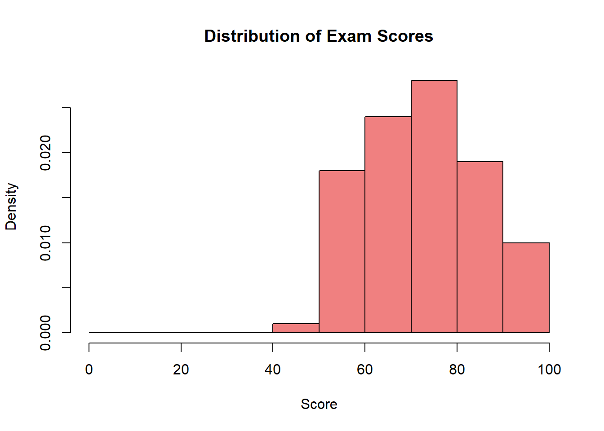

# Simulate coin flips and show convergence
set.seed(42)
n_flips <- 1000
flips <- rbinom(n_flips, 1, 0.5) # 1 = heads, 0 = tails
# Calculate cumulative proportion of heads
cumulative_prop <- cumsum(flips) / seq_along(flips)
# Create data frame for plotting
lln_data <- data.frame(
flip_number = 1:n_flips,
cumulative_proportion = cumulative_prop
)
# Plot the convergence
ggplot(lln_data, aes(x = flip_number, y = cumulative_proportion)) +
geom_line(color = "steelblue", alpha = 0.7) +
geom_hline(yintercept = 0.5, color = "red", linetype = "dashed", size = 1) +
geom_hline(yintercept = c(0.45, 0.55), color = "red", linetype = "dotted", alpha = 0.7) +
labs(
title = "Law of Large Numbers: Coin Flip Proportions Converge to 0.5",
x = "Number of coin flips",
y = "Cumulative proportion of heads",
caption = "Red dashed line = true probability (0.5)\nDotted lines = ±5% range"
) +
scale_y_continuous(limits = c(0.3, 0.7), breaks = seq(0.3, 0.7, 0.1)) +
theme_minimal()1 Introduction to Statistics and Data Analysis for Political Science
Rounding and Scientific Notation in Statistics
Main Rule: Unless otherwise specified, round the decimal parts of decimal numbers to at least 2 significant figures. In statistics, we often work with long decimal parts and very small numbers — don’t round excessively in intermediate steps, round at the end of calculations.
Rounding in Statistical Context
The decimal part consists of digits after the decimal point. In statistics, it’s particularly important to maintain appropriate precision:
Descriptive statistics:
- Mean: \bar{x} = 15.847693... \rightarrow 15.85
- Standard deviation: s = 2.7488... \rightarrow 2.75
- Correlation coefficient: r = 0.78432... \rightarrow 0.78
Very small numbers (p-values, probabilities):
- p = 0.000347... \rightarrow 0.00035 or 3.5 \times 10^{-4}
- P(X > 2) = 0.0000891... \rightarrow 0.000089 or 8.9 \times 10^{-5}
Significant Figures in Decimal Parts
In the decimal part, significant figures are all digits except leading zeros:
- .78432 has 5 significant figures → round to .78 (2 s.f.)
- .000347 has 3 significant figures → round to .00035 (2 s.f.)
- .050600 has 4 significant figures → round to .051 (2 s.f.)
Rounding Rules in Statistics
- Round only the decimal part to at least 2 significant figures
- The integer part remains unchanged
- In long calculations keep 3-4 digits in the decimal part until the final step
- NEVER round to zero - small values have interpretive significance
- For very small numbers use scientific notation when it improves readability
- P-values often require greater precision — keep 2-3 significant figures
⚠️ WARNING: Don’t round to zero!
In statistics, small values have critical interpretive significance:
Incorrect rounding:
- p = 0.00034 \rightarrow 0.00 ❌ (suggests p = 0, which is false)
- \sigma = 0.00089 \rightarrow 0.00 ❌ (suggests no variability)
Correct approach:
- p = 0.00034 \rightarrow 0.00034 or 3.4 \times 10^{-4} ✅
- p = 0.00034 \rightarrow p < 0.001 ✅ (in reports)
- \sigma = 0.00089 \rightarrow 0.00089 or 8.9 \times 10^{-4} ✅
Examples from Statistical Calculations
Example 1: Calculating mean from data: \{12.3, 15.7, 18.1, 14.2, 16.8\}
❌ Wrong (rounding in intermediate steps): \bar{x} = \frac{12 + 16 + 18 + 14 + 17}{5} = \frac{77}{5} = 15.40
✅ Correct (maintaining full precision): \bar{x} = \frac{12.3 + 15.7 + 18.1 + 14.2 + 16.8}{5} = \frac{77.1}{5} = 15.42
Example 2: Calculating sample variance
For data: \bar{x} = 15.42, \sum(x_i - \bar{x})^2 = 18.9876, n = 5
❌ Wrong: s^2 = \frac{18.99}{4} = 4.75 \rightarrow s = \sqrt{4.75} = 2.18
✅ Correct: s^2 = \frac{18.9876}{4} = 4.7469 \rightarrow s = \sqrt{4.7469} = 2.1789... \approx 2.18
Example 3: t-test with small p-value
t = \frac{\bar{x} - \mu_0}{s/\sqrt{n}} = \frac{15.42 - 14}{2.18/\sqrt{5}} = 1.456...
P-value: p = 0.000347 - ✅ Correct: p = 0.00035 or p = 3.5 \times 10^{-4} or p < 0.001 - ❌ Wrong: p = 0.00 (rounding to zero!)
Scientific Notation in Statistics
In statistics, we often encounter very small numbers. Use scientific notation when it improves readability:
P-values and probabilities: - p = 0.000347 = 3.47 \times 10^{-4} (better: 3.5 \times 10^{-4}) - P(Z > 3.5) = 0.000233 = 2.33 \times 10^{-4}
Very small standard deviations: - \sigma = 0.000892 = 8.92 \times 10^{-4}
Large numbers (rare in basic statistics): - N = 1\,234\,567 = 1.23 \times 10^6
When in doubt: Better to keep an extra digit than to round too aggressively
1.1 What Is Statistics?
Statistics is the science of learning from data when the world is messy and uncertain. It helps us make sense of incomplete information, spot meaningful patterns, and make informed decisions despite not having all the answers.
Think of statistics as your toolkit for navigating an uncertain world with data as your guide.
1.2 The Three Core Activities of Statistics
Every statistical analysis does at least one of these three things:
1. Describe: “What does our data show?”
We summarize and visualize data to understand what we’re working with. This means creating clear graphs, calculating averages, and spotting patterns.
Example: Plotting unemployment rates before and after a Universal Basic Income (UBI) pilot program starts, or showing voter turnout across different age groups.
Understanding Policy Pilots
A pilot program is a small-scale, time-limited test of a policy before broader implementation.
For UBI pilots:
- Selected participants receive regular, unconditional cash payments for a fixed period (typically 6-24 months)
- Researchers compare outcomes between those offered the pilot and similar people not offered it
- If participants are chosen by lottery, differences can be interpreted as causal effects of the program
Why pilots matter: They let policymakers test ideas on a small scale before committing to expensive, large-scale programs.
2. Infer: “What can we learn about the bigger picture?”
We use sample data to make educated guesses about larger populations, always acknowledging our uncertainty.
Example: Using a poll of 1,000 people to estimate how the entire country might vote, complete with a margin of error.
3. Predict & Decide: “What might happen next, and what should we do?”
We use patterns from the past to forecast the future and guide decisions, always showing how confident (or uncertain) we are.
Example: Predicting election turnout to decide how many polling stations to open, or forecasting economic impacts of a new policy.
1.3 Key Questions Statistics Helps Answer
- Does a universal basic income pilot change how much people work?
- Do changes to voting rules affect who shows up to vote?
- What do opinion polls really tell us about election outcomes?
- How does education spending relate to student performance?
- Is there a gender pay gap in your field, and how large is it?
Always Start with Description
Before diving into complex analyses, look at your data. Good statistics starts with good pictures and simple summaries.
For UBI research: Plot unemployment rates in pilot areas versus similar non-pilot areas over time. Mark when the program started. Does anything obvious jump out?
For voting research: Show turnout rates over several elections. Mark when electoral rules changed. Do you see any clear before/after patterns?
Why this matters: If you can’t explain what your data shows in plain English, you’re not ready for fancy models.
Opinion Polls: Why One Number Isn’t Enough
Polls are based on samples, so results always vary. A poll showing “Candidate A: 52%, Candidate B: 48%” is incomplete without showing uncertainty.
The Golden Rule of Polls
With roughly 1,000 randomly selected people, expect about ±3 percentage points of uncertainty (95% of the time).
So “52% support” really means “somewhere between 49% and 55% support, most likely.”
The Math Behind It (Optional)
If a candidate gets support from \hat p proportion of n people surveyed, the margin of error is approximately:
\text{Margin of Error} \approx 1.96\sqrt{\frac{\hat p(1-\hat p)}{n}}
What Good Polls Report
- When the poll was conducted (field dates)
- How many people were surveyed (n)
- How “undecided” voters were handled
- The margin of error
Rule of thumb: Don’t over-interpret differences smaller than the margin of error—they might just be noise.
Random Error vs. Systematic Error
Random error is the unpredictable variability that occurs in any sample-based study. The larger the sample, the smaller the random error. This is what the margin of error accounts for.
Systematic error (bias) is a consistent shift in results in one direction. It can result from:
- Unrepresentative samples (e.g., polling only landline phones)
- Leading questions (“Do you support wasting taxpayer money on program X?”)
- Non-response from certain groups (e.g., young people less likely to answer calls)
Key difference: A larger sample reduces random error but does not eliminate systematic error. A poll of 10,000 people with systematic bias can be less accurate than a poll of 1,000 people without such bias.
Regression: Measuring Average Differences And Modeling Relationship Between Variables
At its heart, regression answers: “On average, how much do outcomes differ between groups?”
Y_i = \alpha + \beta X_i + \varepsilon_i
Translation into English:
- Y_i: The outcome we care about (e.g., hours worked per week)
- X_i: Group membership (e.g., X=1 for UBI recipients, X=0 for others)
- \beta: The average difference in outcomes between groups
- \varepsilon_i: Everything else that affects the outcome
Example: If \beta = -2 in a study of UBI and work hours, UBI recipients worked 2 fewer hours per week on average than non-recipients.
Critical point: This shows a relationship or association. By itself, it does not prove the UBI caused the difference.
The Challenge of Causality
The hardest question in statistics: Did the policy cause the change, or would it have happened anyway?
What We Really Want to Know
For the same people in the same circumstances: What would happen with the policy versus without it? Since we can’t observe both realities for the same people, we need clever comparisons.
Strategies for Better Causal Inference
Random Assignment (The Gold Standard) - Randomly assign some people to get UBI, others not - Groups are similar by design, so differences are likely due to UBI
Before/After with Comparison Groups - Compare how much the UBI group changes versus how much a similar non-UBI group changes over the same period - Controls for other things happening at the same time
Sharp Rules or Cutoffs - Compare people just above vs. just below eligibility thresholds - Example: Compare 17-year-olds to 18-year-olds for voting studies
Causal Claims Checklist
Before believing any causal claim, ask:
- What exactly is the treatment/policy?
- What is the outcome being measured?
- Who is the comparison group?
- Why is this comparison fair?
- Could other explanations account for the difference?
Key Takeaways
- Always describe first: Understand your data through visualization and summary statistics before attempting complex modeling
- Embrace uncertainty: Report margins of error and confidence intervals, not just point estimates
- Association ≠ Causation: Regression shows relationships between variables; establishing causation requires careful research design
- Fair comparisons matter: Good causal inference depends on comparing like with like—the closer the comparison groups, the stronger your conclusions
- Be transparent: Good statistics clearly communicates methods, limitations, and uncertainty to help others evaluate your work
1.4 Randomness: a foundation of statistical inference
What is randomness?
In statistics, randomness is an orderly way to describe uncertainty: individual outcomes are unpredictable, yet in long sequences of repetitions stable regularities emerge (e.g., frequencies, means).
Two perspectives
- Single realisation — we cannot determine how a specific voter will vote at a given moment.
- Aggregate — we can describe the share of voters supporting a party and quantify the associated estimation uncertainty.
Note
Epistemic vs. ontological randomness
Epistemic (due to incomplete knowledge): we treat an outcome as random because not all determinants are observed or conditions are not controlled.
Examples:
- the decision of an individual respondent in a poll (we do not know the full set of motivations),
- measurement error in a survey (limited precision, item nonresponse),
- a coin toss modeled as random because minute, unobserved differences in initial conditions determine the outcome.
Ontological (intrinsic indeterminacy): even complete knowledge does not remove outcome uncertainty.
Examples:
- the time to radioactive decay of an atom.
Why Randomness Matters
Random sampling
- Reduces systematic selection bias so the sample resembles the target population (in expectation).
- Makes uncertainty quantifiable (e.g., margins of error; later we’ll name these “confidence intervals”), assuming genuinely random selection and good coverage.
Random assignment (experiments)
- Breaks the link between treatment and other factors, making groups comparable on average (both observed and unobserved).
- Supports credible cause-and-effect claims (identifies average treatment effects under standard conditions).
The Power of Random Sampling (quick demo)
Suppose we take a random sample of n=1000 voters and observe \hat p = 0.55 (i.e., 55% support). Then:
Our best single-number estimate of the population share is \hat p = 0.55.
A typical “95\% range of plausible values” around \hat p can be approximated by \hat p \;\pm\; 2\sqrt{\frac{\hat p(1-\hat p)}{n}} \;=\; 0.55 \;\pm\; 2\sqrt{\frac{0.55\cdot 0.45}{1000}} \approx 0.55 \pm 0.031, i.e., roughly 52\%\text{–}58\% (about \pm 3.1 percentage points).
The width of this range shrinks predictably with sample size: \text{width} \;\propto\; \frac{1}{\sqrt{n}}. For example, increasing n from 1000 to 4000 cuts the range by about half.
Note
How to read the “95% range”
Imagine repeating the same random survey many times. In about 19 out of 20 such surveys, the computed range would include the true population percentage.
This rule-of-thumb assumes random sampling from the target population and similar survey conditions.
Non-sampling issues (nonresponse, coverage, measurement) or complex designs (e.g., clustering) can make the real uncertainty larger.
1.5 The Foundation: Law of Large Numbers
The Law of Large Numbers is one of the most important principles in statistics. It explains why we can make reliable inferences from samples, even when individual outcomes are unpredictable.
The basic idea: When you repeat a random process many times, the average result gets closer and closer to what you’d expect theoretically.
Visualizing the Law of Large Numbers: Coin Flips
Let’s see this in action with coin flips. A fair coin has a 50% chance of landing heads, but individual flips are unpredictable.
What this shows:
- Early flips show wild variation (first 10 flips might be 70% or 30% heads)
- As we add more flips, the proportion stabilizes around 50%
- The “noise” of individual outcomes averages out over time
The Mathematical Statement
Let A denote an event of interest (e.g., “heads on a coin flip”, “vote for party X”, “sum of dice equals 7”). If P(A) = p and we observe n independent trials with the same distribution (i.i.d.), then the sample frequency of A:
\hat{p}_n = \frac{\text{number of occurrences of } A}{n}
converges to p as n increases.
Examples in Different Contexts
Dice example: The event “sum = 7” with two dice has probability 6/36 ≈ 16.7\%, while “sum = 4” has 3/36 ≈ 8.3\%. Over many throws, a sum of 7 appears about twice as often as a sum of 4.
Election polling: If population support for a party equals p, then under random sampling of size n, the observed frequency \hat{p}_n will approach p as n grows (assuming random sampling and independence).
Quality control: If 2% of products are defective, then in large batches, approximately 2% will be found defective (assuming independent production).
Why This Matters for Statistics
Bottom line: Randomness underpins statistical inference by turning uncertainty in individual outcomes into predictable distributions for estimates. The Law of Large Numbers guarantees that the “noise” of individual outcomes averages out, allowing us to:
- Predict long-run frequencies
- Quantify uncertainty (margins of error)
- Draw reliable inferences from samples
- Make probabilistic statements about populations
This principle works in surveys, experiments, and even quantum phenomena (in the frequentist interpretation).
1.6 Understanding Different Types of Unpredictability
Not all uncertainty is the same. Understanding different sources of unpredictability helps us choose appropriate statistical methods and interpret results correctly.
| Concept | What is it? | Source of unpredictability | Example |
|---|---|---|---|
| Randomness | Individual outcomes are uncertain, but the probability distribution is known or modeled. | Fluctuations across realizations; lack of information about a specific outcome. | Dice roll, coin toss, polling sample |
| Chaos | Deterministic dynamics highly sensitive to initial conditions (butterfly effect). | Tiny initial differences grow rapidly → large trajectory divergences. | Weather forecasting, double pendulum, population dynamics |
| Entropy | A measure of uncertainty/dispersion (information-theoretic or thermodynamic). | Larger when outcomes are more evenly distributed (less predictive information). | Shannon entropy in data compression |
| “Haphazardness” (colloquial) | A felt lack of order without an explicit model; a mixture of mechanisms. | No structured description or stable rules; overlapping processes. | Traffic patterns, social media trends |
| Quantum randomness | A single outcome is not determined; only the distribution is specified (Born rule). | Fundamental (ontological) indeterminacy of individual measurements. | Electron spin measurement, photon polarization |
Key Distinctions for Statistical Practice
Deterministic chaos ≠ statistical randomness: A chaotic system is fully deterministic yet practically unpredictable due to extreme sensitivity to initial conditions. Statistical randomness, by contrast, models uncertainty via probability distributions where individual outcomes are genuinely uncertain.
Why this matters: In statistics, we typically model phenomena as random processes, assuming we can specify probability distributions even when individual outcomes are unpredictable. This assumption underlies most statistical inference.
Quantum Mechanics and Fundamental Randomness
In the Copenhagen interpretation, randomness is fundamental (ontological): a single outcome cannot be predicted, but the probability distribution is given by the Born rule:
P(\text{outcome}) \propto \lvert \psi \rvert^{2}
This represents true randomness at the most basic level of nature, not just our ignorance of determining factors.
1.7 Inferential Statistics: From Samples to Populations
Note
Fundamental Principle: Statistics does not eliminate uncertainty—it helps us measure, manage, and communicate it effectively.
The Central Challenge
Research Question: What proportion of students support keeping the library open 24/7?
The Challenge:
- Population: 20,000 students at the university
- Practical constraint: Can only survey 100 students
- Problem: Different samples will yield different results
Without Statistical Thinking: “60 out of 100 students said yes, therefore exactly 60% support it.”
With Statistical Thinking: “We estimate 60% support with a margin of error of ±10%. We can be reasonably confident the true support lies between 50% and 70%.”
The difference is acknowledging and quantifying uncertainty rather than pretending it doesn’t exist.
A Cautionary Tale: When Big Data Goes Wrong
Historical Example: The 1936 Literary Digest Poll
The Literary Digest conducted one of the largest polls in history with 2.4 million responses, predicting Alf Landon would defeat Franklin D. Roosevelt in the 1936 presidential election. Despite the massive sample size:
Prediction: Landon 57%, Roosevelt 43%
Actual Result: Roosevelt 62%, Landon 38%
Error: 25 percentage points!
What went wrong? The poll suffered from systematic bias:
Selection bias in sampling frame:
- Sources: telephone directories, automobile registrations, club memberships
- Problem: In 1936, these sources overrepresented wealthy Americans who favored Landon
- Result: The sample systematically excluded Roosevelt supporters
Non-response bias:
- Only 24% of those contacted responded
- Likely respondents: those with strong anti-Roosevelt opinions
- Non-respondents: many Roosevelt supporters didn’t feel compelled to participate
Key Lessons:
- A large biased sample is worse than a small representative sample
- Standard errors only measure random error, not bias
- Sample size cannot fix fundamental sampling problems
- Representative sampling matters more than sample size
This disaster led to major improvements in polling methodology, including the development of probability sampling and response rate tracking.
From Error to Understanding: Modern Polling
Today’s polls, while much smaller than the Literary Digest’s 2.4 million responses, are far more accurate because they focus on:
Representative sampling: Using probability-based methods to ensure all groups have known chances of selection
Bias detection and correction: Monitoring response rates across demographics and adjusting for known biases
Uncertainty quantification: Reporting margins of error that honestly communicate the limits of what we know
Example: A modern poll of 1,000 randomly selected voters with a 3% margin of error is far more reliable than the Literary Digest’s massive but biased survey.
The Statistical Mindset
Statistical thinking transforms how we approach uncertainty:
Before: “This sample gives us the answer”
After: “This sample gives us evidence, with known limitations”
Before: “Larger samples are always better”
After: “Representative samples with quantified uncertainty are better”
Before: “We either know something or we don’t”
After: “We know things with varying degrees of confidence”
This mindset is essential not just for conducting research, but for being an informed consumer of statistics in news, policy debates, and everyday decisions.
Research Question: What proportion of students support keeping the library open 24/7?
The Challenge: - Population: 20,000 students at the university - Practical constraint: Can only survey 100 students - Problem: Different samples will yield different results
Without Statistical Thinking: “60 out of 100 students said yes, therefore 60% support it.”
With Statistical Thinking: “We estimate 60% support with a margin of error of ±10%. We can be reasonably confident the true support lies between 50% and 70%.”
1.8 Core Concepts of Statistical Inference
1. The Point Estimate
When 60 out of 100 surveyed students support a proposal:
\hat{p} = \frac{60}{100} = 0.60
This point estimate is your best single approximation of the population parameter based on the sample you observed. It represents what we would conclude if we had to give just one number as our answer.
Essential Terminology
Point estimate: The single value calculated from your sample data (e.g., 60% support).
Standard error (SE): The typical amount of variability you would observe in that estimate if you repeated the same study multiple times with different samples.
Margin of error (MoE): The range you add around the point estimate to create an interval that accounts for expected sampling variability.
Confidence interval (CI): The point estimate ± margin of error (e.g., 60% ± 3%)—a range designed to capture the true population parameter with a specified level of confidence.
2. Quantifying Uncertainty
The precision of your estimate depends on several key factors:
Sample Size
Larger samples produce more precise estimates. Rule of thumb: For yes/no outcomes near 50% with simple random sampling, MoE ≈ 1/√n.
Why this works: As sample size increases, the Law of Large Numbers ensures that sample statistics converge to population parameters, reducing sampling variability.
Population Variability
Estimates around 50–50 splits are most difficult to determine precisely (largest margins of error). When opinions are highly skewed (e.g., 90–10), samples naturally provide more stable estimates.
Intuition: Maximum uncertainty occurs when the population is most evenly divided. When there’s strong consensus in one direction, smaller samples can detect this pattern reliably.
Survey Design Complexity
Stratification, clustering, and statistical weighting typically increase uncertainty compared to simple random sampling. Complex designs effectively reduce your sample’s precision—think of it as having a smaller effective sample size.
Understanding Margin of Error
The margin of error represents uncertainty due exclusively to sampling variability—the fact that you surveyed a sample rather than the entire population.
If a poll reports 52% with ±3% (95% confidence), interpret this as:
“Accounting for normal sampling variation, the true population support is probably between 49% and 55%.”
Important limitation: The margin of error does not account for:
- Biased or leading questions
- Unrepresentative sampling frames
- Non-response bias
- Measurement errors
- Social desirability bias
These sources of error can be far more serious than sampling variability, yet they fall outside the reported margin of error.
1.9 The Relationship Between Sample Size and Precision
Understanding how sample size affects precision helps in planning studies and interpreting results.
Standard Margins of Error (Approximate Values)
For a 50/50 proportion with 95% confidence in simple random sampling:
| Sample Size | Approximate MoE |
|---|---|
| n = 100 | ± 10% |
| n = 400 | ± 5% |
| n = 1,000 | ± 3% |
| n = 2,500 | ± 2% |
| n = 10,000 | ± 1% |
Key insight: To halve the margin of error, you need four times the sample size. This demonstrates the law of diminishing returns in sampling—improvements become increasingly expensive.
Mathematical basis: Since MoE ∝ 1/√n, reducing uncertainty requires quadratic increases in sample size.
Important Assumptions
These approximate margins of error assume:
- Simple random sampling from the target population
- Minimal or no statistical weighting
- Binary outcomes (yes/no questions)
- No design effects from clustering or stratification
Complex survey designs, heavy weighting, or significant non-response typically make the effective sample size smaller than the actual sample size, resulting in larger margins of error than these simple calculations suggest.
Practical implication: Always check whether published margins of error account for design complexity and weighting effects.
Why These Numbers Matter
For researchers: Understanding the sample size-precision trade-off helps in:
- Budget planning (larger samples cost more)
- Setting realistic expectations for study precision
- Determining when additional sampling provides meaningful improvements
For consumers of statistics: These benchmarks help evaluate whether reported findings are:
- Precise enough to be meaningful
- Appropriately uncertain given the sample size
- Consistent with standard statistical practice
Example: A poll claiming ±1% margin of error with only 500 respondents should raise questions about methodology, as this level of precision typically requires much larger samples.
1.10 Illustrative Examples: Sample Size and Precision
These examples demonstrate how sample size affects the precision of estimates, using the same hypothetical research question: “What percentage of students support extending library hours?”
Example 1: Small Sample (n = 25)
Result: 15 out of 25 support → 60%
Approximate MoE: ±20%
95% Confidence Interval: 40% to 80%
Interpretation: The true population support could reasonably range from 40% to 80%. This wide interval reflects substantial sampling uncertainty. While useful as an initial signal or pilot study result, this precision level is insufficient for making definitive policy decisions or predictions.
Practical implications: Results this imprecise suggest either increasing the sample size or treating findings as preliminary evidence requiring further investigation.
Example 2: Moderate Sample (n = 100)
Result: 60 out of 100 support → 60%
Approximate MoE: ±10%
95% Confidence Interval: 50% to 70%
Interpretation: The true population support likely falls between 50% and 70%. This provides a clearer directional indication—more students probably support than oppose the proposal. However, the interval remains too wide to distinguish between moderate support (55%) and strong support (65%).
Practical implications: Adequate for understanding general sentiment and broad policy directions, but insufficient for close decisions requiring precise estimates.
Example 3: Large Sample (n = 1,000)
Result: 600 out of 1,000 support → 60%
Approximate MoE: ±3%
95% Confidence Interval: 57% to 63%
Interpretation: The true population support most likely falls between 57% and 63%. This narrow interval provides actionable precision—we can be confident that solid majority support exists, with the level of support falling within a reasonably narrow range.
Practical implications: Sufficient precision for most policy decisions, budget allocations, and implementation planning.
Key Patterns Across Examples
Diminishing returns: Moving from n=25 to n=100 (4× increase) cuts the MoE from ±20% to ±10% (halves it). Moving from n=100 to n=1,000 (10× increase) cuts MoE from ±10% to ±3% (reduces by two-thirds).
Cost-benefit considerations: Each improvement in precision becomes increasingly expensive in terms of required sample size.
1.11 Understanding Confidence Intervals and Confidence Levels
The Logic of Confidence Intervals
A confidence interval combines a point estimate with a quantified measure of uncertainty. The confidence level (typically 95%) describes the long-run reliability of the method, not the probability that any specific interval contains the true value.
What “95% Confidence” Actually Means
Consider a thought experiment: imagine repeating the identical study 100 times, each with a fresh random sample but the same methodology:
The Process:
- Each replication produces a slightly different sample proportion due to sampling variability
- For each sample, we calculate: CI = estimate ± margin of error
- Each confidence interval will be positioned slightly differently around the true population parameter
The Long-Run Pattern:
- Approximately 95 out of 100 intervals would contain the true population parameter
- About 5 intervals would miss the true value due to random sampling variation
- This 95% success rate reflects the reliability of the method, not uncertainty about any single interval
Critical Distinction
For your actual study: The interval you report (e.g., 57% to 63%) either contains the true population parameter or it doesn’t—there’s no probability associated with this specific interval. The 95% confidence refers to how often this procedure produces intervals that capture the truth when applied repeatedly.
Common misinterpretation: “There’s a 95% chance the true value is between 57% and 63%”
Correct interpretation: “If we used this method repeatedly, 95% of such intervals would contain the true value”
The Confidence-Precision Trade-off
Higher confidence requires wider intervals:
- 90% confidence: smaller margin of error, less certainty
- 95% confidence: standard choice, balance of precision and reliability
- 99% confidence: larger margin of error, greater certainty
Example: For the same data, intervals might be:
- 90% CI: 58% to 62% (±2%)
- 95% CI: 57% to 63% (±3%)
- 99% CI: 55% to 65% (±5%)
The choice depends on the costs of being wrong versus the benefits of precision.
1.12 Best Practices and Common Pitfalls
Recommended Practices
Complete reporting: Always report both the point estimate and its uncertainty (confidence interval or margin of error), never just the point estimate alone.
Design transparency: Acknowledge notable design features that affect uncertainty:
- Clustering or stratification effects
- Heavy statistical weighting
- Non-response rates and patterns
- Departures from simple random sampling
Appropriate precision: Match your claimed precision to your actual methodology—don’t imply greater certainty than your design supports.
Critical Limitations
What margins of error do NOT cover:
- Selection bias: Unrepresentative sampling frames
- Non-response bias: Systematic differences between respondents and non-respondents
- Measurement error: Poorly worded questions, social desirability bias
- Coverage error: Excluding relevant population segments
Important reminder: Margin of error quantifies only sampling variability—the uncertainty that comes from studying a sample rather than the entire population. Other sources of error may be far more consequential.
Interpretation guideline: Avoid over-interpreting small differences that fall within the margin of error, as these may simply reflect sampling variation rather than meaningful population differences.
1.13 Mathematical Foundations (*)
For students interested in the underlying calculations:
Standard Formulas
General relationship: Margin of Error ≈ 2 × Standard Error (for 95% confidence)
Rule of thumb for proportions: MoE ≈ 1/√n (when proportion is near 50% and using simple random sampling)
Standard errors for common statistics:
- Proportion: SE(\hat{p}) = \sqrt{\frac{\hat{p}(1-\hat{p})}{n}}
- Mean: SE(\bar{x}) = \frac{s}{\sqrt{n}}
When Standard Calculations Don’t Apply
Non-probability samples: Convenience samples, volunteer surveys, or self-selected respondents cannot legitimately claim traditional margins of error.
Complex weighting: Heavy or poorly understood statistical weights can dramatically increase actual uncertainty beyond simple calculations.
Severe non-response: When response rates are very low or non-response is highly systematic, standard formulas may severely underestimate true uncertainty.
Alternative approaches: In these cases, consider:
- Reporting results without traditional margins of error
- Using design-adjusted calculations that account for complexity
- Calculating effective sample sizes that reflect reduced precision
- Acknowledging limitations explicitly in interpretation
1.14 Summary for Students
Margin of error: Quantifies how much a sample result might differ from the population truth due to the inherent uncertainty of sampling.
Standard error: The underlying measure of typical sampling variability that forms the basis for margins of error.
95% Confidence interval: An estimate ± margin of error, constructed using a method that captures the true population parameter 95% of the time when applied to comparable studies.
Key insight: These measures help distinguish between meaningful differences and mere sampling variation, enabling more informed interpretation of statistical results.
1.15 Visualizing Sampling Variability
library(ggplot2)
set.seed(42)
# Parameters
n_polls <- 20
n_people <- 100
true_support <- 0.50
# Simulate independent polls (binomial counts -> proportions)
support <- rbinom(n_polls, n_people, true_support) / n_people
# Per-poll standard error for a proportion (plug-in using that poll's estimate)
se <- sqrt(support * (1 - support) / n_people)
# "95%" margin of error ≈ 2 × SE (plain-English multiplier, no distribution jargon)
moe <- 2 * se
# Clamp intervals to [0, 1] to avoid plotting outside the parameter space
lower <- pmax(0, support - moe)
upper <- pmin(1, support + moe)
# Does the interval cover the true value?
covers <- (lower <= true_support) & (upper >= true_support)
n_cover <- sum(covers)
n_miss <- n_polls - n_cover
results <- data.frame(
poll = seq_len(n_polls),
support, se, moe, lower, upper, covers
)
# Plot
ggplot(results, aes(x = poll, y = support, color = covers)) +
geom_errorbar(aes(ymin = lower, ymax = upper), width = 0.3, alpha = 0.8) +
geom_point(size = 3) +
geom_hline(yintercept = true_support, linetype = "dashed") +
scale_color_manual(
values = c("TRUE" = "forestgreen", "FALSE" = "darkorange"),
labels = c("TRUE" = "Covers truth", "FALSE" = "Misses truth"),
name = NULL
) +
coord_cartesian(ylim = c(0, 1)) +
labs(
title = "Sampling Variability in 20 Independent Polls",
subtitle = paste0(
"Each poll surveys ", n_people, " different people. Truth = ",
scales::percent(true_support),
". Intervals covering truth: ", n_cover, "/", n_polls,
" (", round(100 * n_cover / n_polls), "%)."
),
x = "Poll Number",
y = "Estimated Proportion"
) +
theme_minimal(base_size = 13) +
theme(legend.position = "top")
Key observation: Each sample yields a different result, but most estimates—and their intervals—cluster around the true value; a few “miss” purely due to the randomness of sampling.
1.16 Statistical Errors: A Simple Guide
Why this matters
Knowing where error comes from helps you:
- Design better studies and measurements
- Interpret estimates correctly
- Report honest limitations
1.17 Two Big Families of Error
1) Random Error (Sampling/Estimation Variability)
Unpredictable ups and downs caused by chance (e.g., which people were sampled, day-to-day noise).
- Quantifiable by statistical theory (e.g., standard error SE, confidence interval CI, margin of error MoE)
- Decreases with larger sample size n
- Address by increasing n, using efficient estimators, and sound designs
2) Systematic Error (Bias)
A consistent shift away from the truth due to design or measurement problems.
- Not fixed by larger n
- Often hard to quantify with simple formulas
- Address by improving design, measurement, and data collection
Warning
Key idea: A large biased sample gives a precisely wrong answer. Increase n to reduce random error; improve design/measurement to reduce bias.
1.18 Bias–Variance (MSE) Decomposition
For an estimator \hat\theta:
\mathrm{MSE}(\hat\theta) \;=\; \underbrace{\mathrm{Var}(\hat\theta)}_{\text{random error}} \;+\; \underbrace{\big(\mathrm{Bias}(\hat\theta)\big)^2}_{\text{systematic error}}.
- Variance: How much the estimate would bounce around if you repeated the study many times (random error).
- Bias: How far the average estimate is from the truth (systematic error).
- Goal: Keep both small. More data lowers variance; better design lowers bias.
Tip
For prediction, a tiny amount of bias can sometimes reduce variance enough to lower overall MSE (mean squared error). For causal questions, uncontrolled bias is usually unacceptable.
1.19 Common Sources of Bias (Across Many Study Types)
Selection Bias Sample/data do not represent the target group. Mitigation: Define the target population clearly; use probability sampling where possible; use credible reweighting.
Nonresponse / Attrition Bias Some types of participants are more likely to be missing or to drop out. Mitigation: Reduce burden (shorter instruments), send reminders, offer small incentives; report who is missing and why.
Measurement Bias Systematic distortion in how variables are measured (miscalibrated device, leading wording, consistent misclassification). Mitigation: Calibrate instruments, pilot and neutralize questions, use validated scales, blind assessors where possible.
Design / Causal Bias Confounding or bad conditioning (e.g., controlling for a mediator). Mitigation: Randomize when feasible; pre-specify plans; use design tools and careful variable selection.
Model / Specification Bias Wrong functional form or missing key interactions; extrapolating beyond the data. Mitigation: Inspect relationships; try reasonable alternatives; check predictions on new data.
Overfitting and Data Leakage Great in-sample fit that fails on new data; accidental sharing of information between training and testing. Mitigation: Keep a true test set; use cross-validation; lock down preprocessing steps.
Processing / Pipeline Errors Coding mistakes, merge issues, unit conversion errors. Mitigation: Reproducible scripts, checks and audits, version control.
1.20 Interpreting Precision (without extra formulas)
- Standard Error (SE): Average estimation noise due to sampling. Smaller SE means more precise estimates.
- Confidence Interval (CI): A range that aims to capture the true value with a stated confidence level (e.g., 95%).
- Margin of Error (MoE): A common shorthand for how wide the CI is in simple settings.
Note
Increasing n narrows SE, CI, and MoE. It does not remove bias.
1.21 Hypothesis Tests: Two Kinds of Mistakes
- Type I Error (False Positive): Concluding there is an effect when there is none. The preset risk of this is the significance level (often 5%).
- Type II Error (False Negative): Missing a real effect. Power is the chance to detect a real effect (higher power is better).
Multiple comparisons: Testing many hypotheses inflates false positives. Consider controlling the false discovery rate (FDR)—the expected proportion of false “discoveries” among all claimed findings.
1.22 Quick Practices That Help
- Before collecting data: define the target population, outcomes, and main comparisons; pilot your measurements.
- During data collection: minimize burden, keep wording neutral, record response/attrition patterns.
- During analysis: check simple diagnostics, try reasonable alternative specifications, guard against overfitting/leakage.
- When reporting: describe data origins, missingness, uncertainty (SE/CI/MoE), and the likely direction of any remaining bias.
1.23 One-Minute Checklist
- Bias: Any likely selection, measurement, or design issue?
- Variance: Is the sample size reasonable for the question?
- Model: Could a simpler or alternative model change conclusions?
- Validation: Does it work on new or held-out data?
- Transparency: Did you state assumptions, limitations, and likely bias direction?
1.24 Glossary (acronyms spelled out)
- SE — Standard Error: Average sampling noise in an estimator.
- CI — Confidence Interval: Interval aiming to include the true value with a chosen confidence level.
- MoE — Margin of Error: A simple width measure for uncertainty in some settings.
- MSE — Mean Squared Error: Variance + Bias² (overall estimation error).
- FDR — False Discovery Rate: Expected share of false positives among all claimed findings.
1.25 Population, Sample, and Superpopulation: Foundations of Statistical Inference
In political science and economics, researchers seek to understand entire populations—the complete set of units they wish to study. However, examining entire populations is typically impossible, impractical, or unnecessary. Statistical methods enable us to learn about populations through carefully selected samples.
1.26 Defining Populations in Political Science and Economics
A population in social science research encompasses various types of analytical units, depending on the research question:
Individual-Level Populations
Population: All 240 million American adults
Sample: 1,000 randomly selected adults in a national survey
Research question: What percentage support universal healthcare policy?
Population: All registered voters in Canada
Sample: 2,500 randomly selected registered voters
Research question: How do economic perceptions influence voting intentions?
Country-Level Analysis
Population: All 195 sovereign nations worldwide
Sample: 50 countries representing different regions and development levels
Research question: Does democratic governance correlate with economic growth rates?
Subnational Government Units
Population: All 3,143 counties in the United States
Sample: 200 randomly selected counties from diverse demographic profiles
Research question: How does local unemployment affect crime rates?
Population: All municipalities in Poland
Sample: 250 randomly selected municipalities
Research question: What factors predict local government efficiency?
Organizational Analysis
Population: All NGOs registered with the United Nations
Sample: 100 NGOs operating across different policy domains
Research question: What organizational characteristics predict NGO effectiveness?
Temporal and Event-Based Populations
Population: All national elections held in European democracies since 1945
Sample: 300 elections spanning different countries and decades
Research question: How do economic conditions affect incumbent vote share?
Population: All legislative bills introduced in the U.S. Congress from 2000–2020
Sample: 500 randomly selected bills across policy areas
Research question: What factors predict whether a bill becomes law?
1.27 The Logic of Statistical Inference: From Sample to Population
A sample represents a subset of the population that researchers actually observe and measure. The fundamental insight of statistical inference is that we can learn about population characteristics by studying samples—provided we select them carefully.
The inferential process follows this logical structure:
\text{Sample Statistic} \xrightarrow{\text{Statistical Inference}} \text{Population Parameter}
Example: If 52% of survey respondents support Candidate A (\hat{p} = 0.52), what can we conclude about support levels in the entire voting population (\pi)?
The key principle: Random selection ensures that every unit in the population has an equal probability of inclusion, thereby preventing systematic bias in sample composition.
Essential Terminology
Population Parameter: A numerical characteristic of the entire population (e.g., population mean \mu, population proportion \pi). Usually unknown and what we aim to estimate.
Sample Statistic: A numerical value calculated from sample data (e.g., sample mean \bar{x}, sample proportion \hat{p}). What we actually observe and compute.
Estimator: The method or formula used to approximate a population parameter from sample data (e.g., “calculate the sample average”).
Estimate: The specific numerical result obtained by applying an estimator to a particular sample.
1.28 Sampling Methods and the Representation Challenge
The quality of statistical inference depends critically on how we select our sample. Different sampling approaches carry distinct advantages and limitations:
1. Convenience Sampling
Method: Surveying easily accessible units (e.g., students in your political science class)
Limitation: Systematic underrepresentation of population subgroups
Example problem: College students typically skew younger, more educated, and more liberal than the general electorate
2. Voluntary Response Sampling
Method: Open participation surveys (e.g., online polls on news websites)
Limitation: Self-selection bias—participants choose whether to respond
Example problem: Individuals with strong opinions disproportionately participate, skewing results
3. Simple Random Sampling
Method: Each population unit has equal probability of selection
Advantage: Best theoretical foundation for representative samples
Example: Randomly selected phone numbers from comprehensive databases covering all demographic groups
4. Stratified Random Sampling
Method: Divide population into meaningful subgroups, then randomly sample within each stratum
Advantage: Guarantees representation of key demographic or geographic categories
Example: National survey ensuring proportional representation from each state or income bracket
5. Cluster Sampling
Method: Randomly select groups (clusters), then survey all units within selected clusters
Advantage: Cost-effective for geographically dispersed populations
Example: Randomly select 50 cities nationwide, then comprehensively survey residents within those cities
1.29 Understanding Parameters, Statistics, and Estimates
The Parameter-Statistic Distinction
Statistical inference rests on a fundamental distinction between what we observe and what we want to know:
Population Parameters
- Numerical characteristics describing the entire population
- Typically unknown and represent our research targets
- Denoted by Greek letters: \mu (population mean), \sigma (population standard deviation), \pi (population proportion)
- Example: The true percentage of all eligible voters who support universal healthcare
Sample Statistics
- Numerical characteristics calculated from observed sample data
- What researchers actually measure and compute
- Denoted by Roman letters: \bar{x} (sample mean), s (sample standard deviation), \hat{p} (sample proportion)
- Example: The percentage of 1,000 survey respondents who express support for universal healthcare
Estimators and Estimates
An estimator defines the computational method for approximating a population parameter. An estimate represents the specific numerical result obtained by applying that method to particular sample data.
Estimator example: The sample mean formula \bar{x} = \frac{\sum_{i=1}^n x_i}{n}
Estimate example: \bar{x} = 6.3 years (the actual computed value from our education data)
Estimands: What Exactly Are We Trying to Estimate?
An estimand is the specific quantity we aim to estimate—what we’re targeting with our statistical analysis. While this is often a population parameter, estimands can be more complex.
Examples of different estimands:
Simple parameter estimand: The population mean income (\mu)
Comparative estimand: The difference in mean income between two groups (\mu_1 - \mu_2)
Causal estimand: The average treatment effect of a job training program on earnings
Conditional estimand: Expected voter turnout given specific weather conditions
The Complete Framework
Understanding statistical inference requires distinguishing between these related but distinct concepts:
- Population Parameter: The true characteristic of the population (e.g., \mu)
- Estimand: The specific quantity we want to estimate (often, but not always, a parameter)
- Estimator: The method for computing our estimate (e.g., sample mean)
- Estimate: The actual number we calculate from our data
Example in context:
- Parameter: True mean voter turnout in all elections (\mu)
- Estimand: Expected turnout difference between rainy vs. sunny election days (\mu_{\text{rainy}} - \mu_{\text{sunny}})
- Estimator: Difference between sample means from rainy and sunny elections
- Estimate: 3.2 percentage points lower turnout on rainy days
This framework helps clarify exactly what question we’re answering and ensures our methods align with our research goals.
1.30 Understanding Sampling Variability Through Simulation
The inherent uncertainty in statistical inference arises because different samples from the same population produce different results. We can illustrate this concept through simulation:
# Simulate sampling variability in polling
set.seed(123)
# Assume true population support is 60%
p_true <- 0.60
n_per_poll <- 1000 # Sample size per poll
n_polls <- 2000 # Number of simulated polls
# Simulate 2000 different polls, each with 1000 respondents
poll_results <- rbinom(n_polls, size = n_per_poll, prob = p_true) / n_per_poll
# Calculate sampling variability
sampling_se <- sd(poll_results)
poll_range <- quantile(poll_results, c(0.025, 0.975))
# Visualize the distribution of poll results
poll_data <- data.frame(
poll_number = 1:n_polls,
support_percentage = poll_results * 100
)
ggplot(poll_data, aes(x = support_percentage)) +
geom_histogram(bins = 50, alpha = 0.7, fill = "steelblue") +
geom_vline(xintercept = p_true * 100, color = "red", linetype = "dashed", size = 1) +
geom_vline(xintercept = poll_range * 100, color = "red", linetype = "dotted") +
labs(
title = "Distribution of Poll Results from 2,000 Simulated Polls",
subtitle = paste("Each poll surveys 1,000 people from population with 60% true support"),
x = "Observed support percentage in poll (%)",
y = "Number of polls",
caption = paste("Standard error:", round(sampling_se * 100, 1), "%\n95% of polls fall between",
round(poll_range[1] * 100, 1), "% and", round(poll_range[2] * 100, 1), "%")
) +
theme_minimal()
cat("Sampling variability (standard error):", round(sampling_se * 100, 2), "%\n")Sampling variability (standard error): 1.54 %cat("95% of poll results fall between:", round(poll_range[1] * 100, 1), "% and", round(poll_range[2] * 100, 1), "%")95% of poll results fall between: 57 % and 62.9 %Key insight: Even when population characteristics remain constant, repeated sampling produces varying results. This sampling variability constitutes the primary source of uncertainty that statistical inference must address and quantify.
1.31 Beyond Simple Population-Sample Models: Superpopulations
When We Observe Complete Populations
Researchers sometimes access entire populations within specific contexts:
- National census data covering all residents
- Complete records of all stock transactions in 2024
- Comprehensive hospital admission data for 2023
- All municipalities in Poland with their characteristics in 2024
Question: If we can compute exact population parameters for 2024, why discuss uncertainty?
Answer: We typically seek to understand underlying processes, not merely describe single time periods.
The Superpopulation Concept
The superpopulation or Data Generating Process (DGP) represents the conceptual mechanism that produces observed data—an ongoing process that could generate different outcomes under slightly altered conditions.
Instead of thinking only:
Population → SampleWe often conceptualize:
SUPERPOPULATION (underlying process)
↓
[Data-generating mechanism operating under specific conditions]
↓
OBSERVED POPULATION (particular year/context)
↓
[Statistical analysis and interpretation]
↓
INSIGHTS about the general processApplied Examples
Electoral Behavior Analysis
- Observed data: Voter turnout across all municipalities in 2024 election
- Underlying process: How weather conditions, campaign intensity, local issues, and institutional factors generally influence participation
- Research goal: Develop generalizable understanding of turnout determinants applicable to future elections
Economic Performance Studies
- Observed data: All business transactions recorded in 2024
- Underlying process: How market demand, pricing strategies, promotional activities, and economic conditions interact to generate sales
- Research goal: Understand business performance drivers to inform future strategy and policy
Educational Effectiveness Research
- Observed data: All student grades in current semester
- Underlying process: How teaching methods, curriculum design, student preparation, and institutional support affect learning outcomes
- Research goal: Assess whether pedagogical innovations generally improve educational effectiveness
1.32 A Practical Analogy: The Soup-Tasting Approach to Statistical Inference
Consider a chef preparing soup for 100 people who needs to assess its flavor without consuming the entire batch:
Population: The entire pot of soup (100 servings)
Sample: A single spoonful for tasting
Population Parameter: The true average saltiness of the complete pot (unknown)
Sample Statistic: The saltiness level detected in the spoonful (observable)
Statistical Inference: Using the spoonful’s characteristics to draw conclusions about the entire pot
Key Principles Illustrated
1. Random sampling is essential: The chef must thoroughly stir the soup before sampling. Consistently sampling from the surface might miss seasoning that has settled, introducing systematic bias.
2. Sample size affects precision: A larger spoonful provides more reliable information about overall flavor than a small sip, though practical constraints limit sample size.
3. Uncertainty is inherent: Even with proper sampling technique, the spoonful might not perfectly represent the entire pot’s characteristics.
4. Systematic bias undermines inference: If someone secretly adds salt only to the sampling area, conclusions about the whole pot become invalid—illustrating how sampling bias distorts statistical inference.
5. Inference has scope limitations: The sample can estimate average saltiness but cannot reveal whether some portions are saltier than others, highlighting the limits of what samples can tell us about population variability.
This analogy captures the essence of statistical reasoning: using carefully selected samples to learn about larger populations while explicitly acknowledging and quantifying the inherent uncertainty in this process.
1.33 Summary Framework: Sources of Uncertainty in Statistical Inference
| Concept | Definition | Primary Source of Uncertainty | Example |
|---|---|---|---|
| Sample | Subset of population units actually observed | Sampling variability: Different samples yield different results | 1,000 surveyed voters from population of millions |
| Population | Complete set of units in specific context/time | Temporal/contextual variation: Different time periods or conditions produce different population characteristics | All registered voters in 2024 vs. 2028 |
| Superpopulation (DGP) | Underlying process generating observable data | Model uncertainty: Our theoretical understanding may be incomplete or simplified | Voter behavior mechanism influenced by unobserved factors |
Practical implication: Comprehensive statistical analysis acknowledges multiple sources of uncertainty, from sampling variation to model limitations, providing appropriately humble conclusions about what data can and cannot tell us.
Common Statistical Pitfalls in Political Science
- Ecological fallacy: Assuming group-level patterns apply to individuals
- Selection bias: Non-random samples that systematically exclude certain groups
- Confounding: Failing to account for variables that affect both X and Y
- P-hacking: Testing multiple hypotheses until finding significance
- Overgeneralization: Extending findings beyond the studied population
1.34 Measurement: Transforming Concepts into Numbers
The Political World is Full of Data
Political science has evolved from a primarily theoretical discipline to one that increasingly relies on empirical evidence. Whether we’re studying:
- Election outcomes: Why do people vote the way they do?
- Public opinion: What shapes attitudes toward immigration or climate policy?
- International relations: What factors predict conflict between nations?
- Policy effectiveness: Did a new education policy actually improve outcomes?
We need systematic ways to analyze data and draw conclusions that go beyond anecdotes and personal impressions.
Consider this question: “Does democracy lead to economic growth?”
Your intuition might suggest yes—democratic countries tend to be wealthier. But is this causation or correlation? Are there exceptions? How confident can we be in our conclusions?
Statistics provides the tools to move from hunches to evidence-based answers, helping us distinguish between what seems true and what actually is true.
Levels of Measurement
Nominal (categories without order)
- Party affiliation: Democratic, Republican, Independent
- Country: Poland, Germany, France
- Voting choice: Candidate A, Candidate B, Did not vote
Permitted operations: frequency counts, mode, cross-tabulation, chi-square test.
Ordinal (ordered categories)
- Education level: elementary < high school < bachelor’s < master’s < doctoral degree
- Likert scales: Strongly disagree < Disagree < Neutral < Agree < Strongly agree
- Political knowledge level: low < medium < high
Permitted operations: ordering, median, quartiles, Spearman’s rank correlation, non-parametric tests (e.g., Mann-Whitney).
Important
Key characteristic: Distances between categories do not have to be equal. For example, the difference in knowledge between “low” and “medium” levels may be much larger or smaller than the difference between “medium” and “high” levels. We only know that one level is higher than another, but not “by how much.”
Interval (equal intervals, arbitrary zero)
- Calendar years: difference between 2020–2021 = difference between 2023–2024
- Temperature in °C or °F
- Standardized scores based on linear transformation (e.g., z-score, T-score)
Permitted operations: addition, subtraction, arithmetic mean, standard deviation, Pearson correlation, linear regression.
Warning
Limitation: Comparisons like “twice as much” make no sense because the zero point is arbitrary. For example: 20°C is not “twice as warm” as 10°C. If we used the Fahrenheit scale, these same temperatures would be 68°F and 50°F – suddenly one is no longer “twice” the other.
Ratio (equal intervals + true zero)
- Number of votes cast (0 = actually zero votes)
- Age, income, campaign expenditures
- Number of correct answers on a test, percentage of correct answers
Permitted operations: all operations, including ratios (“twice as many votes”).
Special Case: Psychometric Test Results
| Type of Score | Level of Measurement | Note |
|---|---|---|
| Letter grades (A/B/C), stanines, categories | Ordinal | Only ordering, no equal intervals |
| Percentiles | Ordinal | Same percentile increase means different change in actual scores |
| IQ scores | Ordinal | Rank-ordered and transformed to normal distribution |
| z-score, T-score | Interval* | *Only if original scores truly have equal intervals |
| Raw number of points, % correct | Ratio | True zero, constant increment |
Example of the percentile problem: Moving from the 50th to 60th percentile might mean a change of 2-3 points on a test, while moving from the 90th to 95th percentile might mean a change of 10 points. Percentiles only tell us what percentage of people scored worse, but they don’t tell us about the actual magnitude of differences in abilities.
1.35 Statistical Significance: Making Sense of Uncertain Evidence
The Courtroom Analogy for Hypothesis Testing
Statistical hypothesis testing follows a logic analogous to legal proceedings:
- Null hypothesis (H_0): The defendant is innocent (no real effect exists)
- Alternative hypothesis (H_1): The defendant is guilty (a real effect exists)
- Evidence: Our data and statistical test
- Verdict: Reject H_0 (find significance) or fail to reject H_0 (no significance)
As in legal proceedings, we require strong evidence to reject the presumption of innocence (no effect). This framework leads to two types of potential errors:
- Type I error (false positive): Convicting an innocent person (rejecting H_0 when H_0 is true), controlled by significance level \alpha (typically 0.05)
- Type II error (false negative): Acquitting a guilty person (failing to reject H_0 when H_1 is true), with probability \beta and power 1-\beta
What is Statistical Significance?
When we observe a difference in our data, we face a fundamental question: Does this difference reflect a true population characteristic or merely sampling variability?
Statistical significance provides a framework for answering:
Is the observed pattern likely due to a real effect, or could it plausibly arise from random chance alone?
This framework distinguishes between:
- Signal: Real patterns reflecting true relationships in the population
- Noise: Random variation arising from sampling
The Logic of Hypothesis Testing
The null hypothesis represents our default assumption—typically that no effect or relationship exists:
- No difference between groups
- No relationship between variables
- No treatment effect
We maintain this skeptical stance until the data provide sufficient evidence to reject it.
Understanding p-values: Three Complementary Perspectives
The p-value remains one of the most misunderstood concepts in statistics. Consider three complementary interpretations:
1. The Surprise Metric
The p-value quantifies how surprised we should be to observe our data if nothing systematic were occurring:
- Small p-value (< 0.05): Very surprising under the null → Evidence for an effect
- Large p-value (> 0.05): Not surprising under the null → Insufficient evidence
2. The Coin Flip Illustration
Consider testing whether a coin is fair. You flip it 10 times and observe 8 heads.
The p-value answers: If the coin were actually fair, how often would we observe 8 or more heads in 10 flips?
Calculation: P(X \geq 8) = \sum_{k=8}^{10} \binom{10}{k} 0.5^{10} = \frac{56}{1024} \approx 0.0547
Since this probability is relatively small (5.47%), we have moderate evidence against fairness.
3. The Formal Definition
A p-value is:
The probability of observing data at least as extreme as what we obtained, assuming the null hypothesis is true.
Formally, for test statistic T and observed value t_{\text{obs}}:
- One-sided: p = P(T \geq t_{\text{obs}} \mid H_0) or P(T \leq t_{\text{obs}} \mid H_0)
- Two-sided: p = 2 \min\{P(T \geq |t_{\text{obs}}| \mid H_0), P(T \leq -|t_{\text{obs}}| \mid H_0)\}
Critical clarification: The p-value assumes the null hypothesis is true—it does not provide the probability that the null hypothesis is true.
A Visual Understanding of p-values
# Simulate what happens under the null hypothesis
set.seed(789)
null_distribution <- rnorm(10000, mean = 0, sd = 1)
# Our observed test statistic
observed <- 2.1
# Create data frame for visualization
hist_data <- data.frame(values = null_distribution)
# Create the visualization
ggplot(hist_data, aes(x = values)) +
geom_histogram(aes(y = ..density..), bins = 50,
fill = "lightblue", color = "black", alpha = 0.7) +
geom_density(color = "darkblue", linewidth = 1) +
geom_vline(xintercept = observed, color = "red", linewidth = 1.5) +
geom_vline(xintercept = -observed, color = "red", linewidth = 1.5,
linetype = "dashed") +
geom_area(stat = "function", fun = dnorm,
xlim = c(observed, 4), fill = "red", alpha = 0.3) +
geom_area(stat = "function", fun = dnorm,
xlim = c(-4, -observed), fill = "red", alpha = 0.3) +
labs(title = "What the p-value Measures",
subtitle = "Distribution of possible results if the null hypothesis were true",
x = "Test Statistic Values",
y = "Probability Density") +
annotate("text", x = 2.5, y = 0.15,
label = "p-value:\nProbability of\nresults this extreme\nor more extreme",
color = "red", fontface = "bold", size = 3) +
annotate("text", x = 0, y = 0.2,
label = "Most likely\nresults if\nno effect",
color = "darkblue", size = 3)
The blue distribution represents expected outcomes under the null hypothesis. The red lines mark our observed result, and the red shaded areas show the p-value—the probability of obtaining results at least this extreme by chance alone.
1.36 Statistical Significance: Distinguishing Signal from Noise
When researchers observe patterns in their data—whether a difference between groups, a correlation between variables, or a treatment effect—they face a fundamental question: Does this pattern reflect a genuine phenomenon in the population, or could it have arisen purely by chance through the random process of sampling?
Statistical significance provides a systematic framework for addressing this question, helping us distinguish between meaningful signal (real patterns reflecting population characteristics) and random noise (variation due to sampling variability).
1.37 The Logic of Hypothesis Testing: A Legal Framework
Statistical hypothesis testing operates according to principles analogous to legal proceedings, providing a structured approach to evaluating evidence:
The Presumption of No Effect
Just as legal systems presume innocence until proven guilty, statistical testing begins with a null hypothesis (H_0) that presumes no effect exists:
- Null hypothesis (H_0): No difference between groups, no relationship between variables, no treatment effect
- Alternative hypothesis (H_1): A genuine effect, difference, or relationship exists
- Evidence: Our sample data and statistical test results
- Decision: Reject H_0 (conclude effect exists) or fail to reject H_0 (insufficient evidence for effect)
The Burden of Proof
As in legal proceedings, we maintain skepticism about the existence of an effect until the evidence becomes compelling enough to overcome this presumption. This conservative approach helps protect against false discoveries while requiring substantial evidence for scientific claims.
Types of Decision Errors
This framework inevitably involves the possibility of two types of errors, each with distinct consequences:
Type I Error (False Positive)
- Definition: Rejecting the null hypothesis when it is actually true
- Legal analogy: Convicting an innocent person
- Scientific consequence: Claiming an effect exists when it doesn’t
- Control mechanism: Significance level \alpha (typically 0.05)
- Example: Concluding a campaign message increases voter turnout when it actually has no effect
Type II Error (False Negative)
- Definition: Failing to reject the null hypothesis when the alternative is true
- Legal analogy: Acquitting a guilty person
- Scientific consequence: Missing a genuine effect
- Probability: Denoted as \beta; Power = 1 - \beta
- Example: Failing to detect a real relationship between economic conditions and voting behavior
The Trade-off Between Error Types
Reducing one type of error typically increases the risk of the other:
- Stricter significance thresholds (smaller \alpha) reduce false positives but increase false negatives
- Lenient thresholds (larger \alpha) reduce false negatives but increase false positives
- Larger sample sizes help reduce both types of errors simultaneously
1.38 Understanding p-values: Multiple Perspectives
The p-value represents one of statistics’ most important yet frequently misunderstood concepts. Consider these complementary interpretations:
1. The Surprise Index
The p-value quantifies how surprised we should be by our observed data if no genuine effect exists:
- Small p-value (< 0.05): Our data would be quite surprising if no effect existed → Evidence supporting the alternative hypothesis
- Large p-value (> 0.05): Our data are reasonably consistent with no effect → Insufficient evidence to reject the null
Intuition: If you expected to find nothing but discovered something dramatic, that’s surprising and suggests something real might be happening.
2. The Coin Flip Illustration
Consider testing whether a coin is fair by flipping it 10 times. You observe 8 heads.
Question: If the coin were actually fair, how often would we observe 8 or more heads in 10 flips?
Calculation: P(X \geq 8 \mid \text{fair coin}) = \sum_{k=8}^{10} \binom{10}{k} 0.5^{10} = \frac{56}{1024} \approx 0.055
Interpretation: This outcome would occur about 5.5% of the time with a fair coin—uncommon enough to raise questions about fairness, but not definitively conclusive.
3. The Formal Definition
p-value: The probability of observing data at least as extreme as what we obtained, assuming the null hypothesis is true.
Mathematically, for test statistic T with observed value t_{\text{obs}}:
- One-sided test: p = P(T \geq t_{\text{obs}} \mid H_0) (or P(T \leq t_{\text{obs}} \mid H_0))
- Two-sided test: p = 2 \times P(T \geq |t_{\text{obs}}| \mid H_0)
Critical distinction: The p-value assumes the null hypothesis is true—it does not provide the probability that the null hypothesis is true given our data.
1.39 Visualizing p-values: What They Actually Measure
# Demonstrate what p-values measure with improved design
set.seed(789)
# Generate null distribution (what we'd expect if no effect exists)
x_range <- seq(-4, 4, length.out = 1000)
null_density <- dnorm(x_range)
observed_statistic <- 2.1
# Calculate actual p-value
p_value <- 2 * (1 - pnorm(abs(observed_statistic)))
# Create data frame for plotting
plot_data <- data.frame(
x = x_range,
density = null_density
)
# Create the main plot
p <- ggplot(plot_data, aes(x = x, y = density)) +
# Add subtle grid
theme_minimal() +
theme(
panel.grid.major = element_line(color = "grey90", size = 0.5),
panel.grid.minor = element_blank(),
plot.title = element_text(size = 16, face = "bold", margin = margin(b = 10)),
plot.subtitle = element_text(size = 13, color = "grey30", margin = margin(b = 20)),
plot.caption = element_text(size = 11, color = "grey50", hjust = 0),
axis.title = element_text(size = 12, face = "bold"),
axis.text = element_text(size = 11),
plot.background = element_rect(fill = "white", color = NA),
panel.background = element_rect(fill = "white", color = NA)
) +
# Main distribution curve with gradient fill
geom_area(alpha = 0.3, fill = "#2E86AB") +
geom_line(color = "#2E86AB", linewidth = 1.5) +
# Shade the critical regions (p-value areas)
geom_area(data = subset(plot_data, x >= observed_statistic),
alpha = 0.7, fill = "#F24236") +
geom_area(data = subset(plot_data, x <= -observed_statistic),
alpha = 0.7, fill = "#F24236") +
# Add vertical lines for observed statistics
geom_vline(xintercept = observed_statistic,
color = "#A61E1B", linewidth = 2.5, alpha = 0.9) +
geom_vline(xintercept = -observed_statistic,
color = "#A61E1B", linewidth = 2.5, alpha = 0.9) +
# Add horizontal line at y = 0 for cleaner look
geom_hline(yintercept = 0, color = "black", size = 0.5) +
# Improved annotations with better positioning and styling
annotate("text", x = 2.8, y = 0.18,
label = paste("p-value =", round(p_value, 4), "\n\nProbability of observing\nresults this extreme\n(or more extreme)\nby chance alone"),
color = "#A61E1B", fontface = "bold", size = 4,
hjust = 0.5, vjust = 0.5,
fill = "white", alpha = 0.9) +
annotate("text", x = 0, y = 0.32,
label = "Expected distribution\nof results if no effect exists\n(null hypothesis true)",
color = "#2E86AB", size = 4, fontface = "bold",
hjust = 0.5, vjust = 0.5) +
# Add arrows pointing to key areas
annotate("segment", x = 2.5, y = 0.12, xend = 2.2, yend = 0.05,
arrow = arrow(length = unit(0.3, "cm"), type = "closed"),
color = "#A61E1B", linewidth = 1.2) +
annotate("segment", x = -2.5, y = 0.12, xend = -2.2, yend = 0.05,
arrow = arrow(length = unit(0.3, "cm"), type = "closed"),
color = "#A61E1B", linewidth = 1.2) +
# Labels for the observed statistics
annotate("text", x = observed_statistic, y = -0.02,
label = paste("Observed\nstatistic:", round(observed_statistic, 1)),
color = "#A61E1B", size = 3.5, fontface = "bold", hjust = 0.5) +
annotate("text", x = -observed_statistic, y = -0.02,
label = paste("Equally extreme\nin opposite direction"),
color = "#A61E1B", size = 3.5, fontface = "bold", hjust = 0.5) +
# Add significance threshold reference
geom_vline(xintercept = qnorm(0.975),
color = "orange", linewidth = 1, linetype = "dashed", alpha = 0.7) +
geom_vline(xintercept = qnorm(0.025),
color = "orange", linewidth = 1, linetype = "dashed", alpha = 0.7) +
annotate("text", x = qnorm(0.975), y = 0.35,
label = "Critical value\n(α = 0.05)",
color = "orange", size = 3, hjust = 0.5, fontface = "bold") +
# Clean up the plot
labs(
title = "Understanding p-values: The Logic of Hypothesis Testing",
subtitle = "How we measure the probability of observing extreme results by chance alone",
x = "Test Statistic Values (standardized)",
y = "Probability Density",
caption = "Red areas represent the p-value. Orange dashed lines show conventional significance threshold (α = 0.05).\nOur observed result is more extreme than this threshold, providing evidence against the null hypothesis."
) +
# Set clean axis limits
coord_cartesian(xlim = c(-4, 4), ylim = c(-0.05, 0.45)) +
scale_x_continuous(breaks = seq(-4, 4, 1)) +
scale_y_continuous(breaks = seq(0, 0.4, 0.1))
# Display the plot
print(p)
Key insight: The p-value represents the red shaded areas—the probability that random chance alone could produce results as extreme as (or more extreme than) what we actually observed.
1.40 Common Misinterpretations of p-values
Understanding what p-values do not tell us is crucial for proper interpretation:
What p-values Are NOT
❌ The probability that the null hypothesis is true
- Wrong: “p = 0.03 means there’s a 3% chance no effect exists”
- Correct: “p = 0.03 means there’s a 3% chance of observing results this extreme if no effect existed”
❌ The probability that results are due to chance
- Wrong: “p = 0.03 means there’s a 3% probability our results are due to chance”
- Correct: “p = 0.03 is calculated assuming our results could be due to chance”
❌ The size or importance of an effect
- Wrong: “p = 0.001 indicates a larger effect than p = 0.04”
- Correct: “Both suggest evidence against the null, but effect sizes must be examined separately”
❌ The probability of replication
- Wrong: “p = 0.05 means 95% chance of replicating this result”
- Correct: “Replication probability depends on effect size, power, and study design”
1.41 The Arbitrary Nature of 0.05
The conventional significance threshold of α = 0.05 has historical rather than scientific origins:
Historical Context
- Popularized by statistician Ronald Fisher in the 1920s
- Chosen somewhat arbitrarily as a reasonable balance between Type I and Type II errors
- Became entrenched through tradition rather than mathematical necessity
Alternative Approaches
Context-dependent thresholds: Choose α based on consequences of errors
- Medical research: Often use α = 0.01 to reduce false positives
- Exploratory research: Might use α = 0.10 to reduce false negatives
- Multiple comparisons: Adjust α downward (e.g., Bonferroni correction)
Continuous interpretation: Report exact p-values rather than just “significant” vs. “non-significant”
- p = 0.03 and p = 0.048 both cross the 0.05 threshold but represent different levels of evidence
- p = 0.06 is close to conventional significance and merits discussion
1.42 Statistical Significance vs. Practical Significance
Statistical significance addresses whether an effect exists; practical significance concerns whether it matters:
The Sample Size Paradox
Large samples can detect tiny, practically meaningless effects:
Example: With 100,000 survey respondents, a 1% difference in candidate support might be statistically significant (p < 0.001) but politically irrelevant.
Effect Size Measures
Always complement significance tests with effect size indicators:
Cohen’s d for mean differences:
- Small effect: d ≈ 0.2
- Medium effect: d ≈ 0.5
- Large effect: d ≈ 0.8
Correlation coefficient (r) for associations:
- Small: r ≈ 0.1
- Medium: r ≈ 0.3
- Large: r ≈ 0.5
Confidence Intervals: A Better Approach
Confidence intervals provide both significance information and effect size:
- Significance: Does the interval exclude the null value?
- Effect size: How large is the estimated effect?
- Precision: How narrow is the interval?
Example: “Campaign exposure increases vote intention by 3.2 percentage points (95% CI: 1.1 to 5.3 points)”
This simultaneously indicates: - Statistical significance (interval excludes zero) - Effect size (3.2 percentage points) - Uncertainty (could be as small as 1.1 or as large as 5.3)
1.43 Applied Example: Evaluating a Get-Out-The-Vote Campaign
Research Question
Does a text message reminder campaign increase voter turnout?
Study Design
- Sample: 10,000 registered voters
- Treatment group: 5,000 voters receive text reminders (n₁ = 5,000)
- Control group: 5,000 voters receive no messages (n₂ = 5,000)
- Outcome: Whether they voted (binary)
Results
- Treatment group turnout: 68% (3,400 out of 5,000)
- Control group turnout: 64% (3,200 out of 5,000)
- Difference: 4 percentage points
Statistical Analysis
Test statistic: Two-proportion z-test
Null hypothesis: No difference in turnout rates (H₀: p₁ - p₂ = 0)
Alternative hypothesis: Text messages increase turnout (H₁: p₁ - p₂ > 0)
Calculation:
Pooled proportion: p̂ = 6,600/10,000 = 0.66
Standard error: SE = √[0.66 × 0.34 × (1/5000 + 1/5000)] ≈ 0.0095
z = (0.68 - 0.64)/0.0095 ≈ 4.21
p-value ≈ 0.00001Interpretation
Statistical significance: p < 0.001 provides strong evidence against the null hypothesis. The observed difference is very unlikely to have occurred by chance alone.
Practical significance: A 4-percentage-point increase in turnout could be politically meaningful, potentially affecting election outcomes in close races.
Confidence interval: 95% CI for the difference: approximately 2.1 to 5.9 percentage points, indicating the true effect likely falls in this range.
1.44 Best Practices for Reporting Statistical Significance
Complete Reporting Standards
Always include:
- Exact p-values (not just “p < 0.05”)
- Confidence intervals for effect sizes
- Sample sizes for all groups
- Effect size measures when appropriate
Example of good reporting: > “Text message reminders increased voter turnout by 4.0 percentage points (68% vs. 64%), a statistically significant difference (z = 4.21, p < 0.001, 95% CI: 2.1-5.9 points). This represents a small to medium effect size (Cohen’s h = 0.08).”
Avoid Common Reporting Errors
Don’t: “The result was not significant (p = 0.08), so there is no effect”
Do: “The result did not reach conventional significance (p = 0.08), providing limited evidence for an effect”
Don’t: “The effect was highly significant (p < 0.001)”
Do: “The effect was statistically significant (p < 0.001) and represented a 4-percentage-point increase”
1.45 Summary: A Balanced Approach to Statistical Significance
Statistical significance provides valuable information about whether observed patterns likely reflect genuine phenomena rather than sampling variability. However, it represents just one piece of the evidence puzzle.
Key Principles
- Significance indicates strength of evidence, not truth or importance
- p-values measure surprise under the null hypothesis, not effect size or practical importance
- The 0.05 threshold is conventional, not sacred—consider context and consequences
- Confidence intervals often provide richer information than significance tests alone
- Statistical significance without practical significance is hollow; always consider effect sizes
- Non-significance does not prove the absence of an effect—it indicates insufficient evidence
The Bigger Picture
Statistical significance represents a tool for disciplined thinking about evidence and uncertainty. When used appropriately alongside other statistical measures, it helps researchers and readers distinguish between patterns worthy of attention and those likely resulting from chance variation.
The goal is not to achieve statistical significance but to build cumulative understanding through careful analysis, appropriate interpretation, and honest acknowledgment of uncertainty.
1.46 Understanding p-values Through Applied Examples
Statistical concepts become clearer when examined through concrete research scenarios. The following examples demonstrate p-value interpretation in realistic political science contexts.
1.47 Example 1: Weather Effects on Electoral Participation
Research Context
Political scientists have long investigated environmental factors that might influence democratic participation. Weather conditions on election day represent a natural experiment—voters face the same choices but under different environmental conditions.
Research Question: Does precipitation reduce voter turnout?
Hypothesis: Rainy weather increases the cost of voting, leading to decreased turnout.
# Simulate realistic weather and turnout data
set.seed(456)
options(scipen = 999)
# Create data reflecting actual research findings
n_elections <- 30
weather_data <- data.frame(
weather = factor(c(rep("Rainy", n_elections), rep("Sunny", n_elections)),
levels = c("Sunny", "Rainy")),
turnout = c(
rnorm(n_elections, 0.62, 0.06), # Rainy days: lower turnout
rnorm(n_elections, 0.68, 0.06) # Sunny days: higher turnout
)
)
# Calculate descriptive statistics
rain_turnout <- mean(weather_data$turnout[weather_data$weather == "Rainy"])
sunny_turnout <- mean(weather_data$turnout[weather_data$weather == "Sunny"])
weather_diff <- sunny_turnout - rain_turnout
# Perform statistical test
weather_test <- t.test(turnout ~ weather, data = weather_data)
weather_p <- weather_test$p.value
ci_lower <- weather_test$conf.int[1]
ci_upper <- weather_test$conf.int[2]
# Calculate effect size (Cohen's d)
pooled_sd <- sqrt(((n_elections-1)*var(weather_data$turnout[weather_data$weather=="Rainy"]) +
(n_elections-1)*var(weather_data$turnout[weather_data$weather=="Sunny"])) /
(2*n_elections-2))
cohens_d <- weather_diff / pooled_sd
# Create enhanced visualization
ggplot(weather_data, aes(x = weather, y = turnout, fill = weather)) +
geom_violin(alpha = 0.3, width = 0.8) +
geom_boxplot(alpha = 0.7, width = 0.3, outlier.shape = NA) +
geom_jitter(width = 0.15, alpha = 0.6, size = 2.5, color = "white") +
stat_summary(fun = mean, geom = "point", shape = 23, size = 5,
fill = "black", color = "white", stroke = 1) +
scale_fill_manual(values = c("Rainy" = "#4A90A4", "Sunny" = "#F7B801")) +
scale_y_continuous(labels = scales::percent_format()) +
labs(
title = "Weather Conditions and Voter Turnout",
subtitle = paste0("Mean difference: ", round(weather_diff*100, 1),
" percentage points (95% CI: [",
round(ci_lower*100, 1), ", ", round(ci_upper*100, 1),
"]), p = ", round(weather_p, 3),
", Cohen's d = ", round(cohens_d, 2)),
x = "Weather Condition on Election Day",
y = "Voter Turnout Rate",
caption = "Black diamonds indicate group means. Individual points show election observations."
) +
theme_minimal() +
theme(
legend.position = "none",
plot.title = element_text(size = 14, face = "bold"),
plot.subtitle = element_text(size = 11),
axis.title = element_text(face = "bold")
)
Statistical Analysis Results
Descriptive Statistics:
- Sunny day average turnout: 68.9%
- Rainy day average turnout: 63.4%
- Mean difference: 5.5 percentage points
Inferential Statistics:
- t-statistic: 3.54
- p-value: 0.0008
- 95% Confidence Interval: [2.4%, 8.7%]
- Effect size (Cohen’s d): 0.91 (medium effect)
Interpretation Framework
What the p-value tells us: If weather conditions had no impact on voter turnout, we would observe a difference of 5.5 percentage points or larger in only 0.08% of similar studies. This constitutes strong evidence against the null hypothesis of no weather effect.
Practical significance: The observed effect size (d = 0.91) suggests a meaningful real-world impact. A 5.5 percentage point reduction in turnout could influence election outcomes, particularly in competitive races.
Limitations and caveats: This analysis assumes random assignment to weather conditions (reasonable) and that other factors remain constant across weather conditions (potentially problematic if certain types of elections systematically occur during different seasons).
1.48 Example 2: When Evidence Is Insufficient
The Importance of Non-Significant Results
Research that fails to achieve statistical significance provides valuable scientific information, contrary to common publication biases that favor “positive” results.
Research Question: Does social media usage predict political knowledge among college students?
Theoretical background: Some scholars argue social media provides political information access; others contend it promotes superficial engagement.
# Simulate data with weak relationship
set.seed(999)
n_people <- 150
# Create data with minimal relationship
social_media_data <- data.frame(
social_media_hours = runif(n_people, 0, 8),
political_knowledge = rnorm(n_people, 50, 15)
)
# Add small, barely detectable relationship
social_media_data$political_knowledge <- social_media_data$political_knowledge +
0.3 * social_media_data$social_media_hours + rnorm(n_people, 0, 14)
# Statistical analysis
sm_model <- lm(political_knowledge ~ social_media_hours, data = social_media_data)
sm_summary <- summary(sm_model)
sm_coef <- coef(sm_model)[2]
sm_p <- sm_summary$coefficients[2, 4]
sm_se <- sm_summary$coefficients[2, 2]
r_squared <- sm_summary$r.squared
ci_lower_sm <- sm_coef - 1.96 * sm_se
ci_upper_sm <- sm_coef + 1.96 * sm_se
# Enhanced visualization
ggplot(social_media_data, aes(x = social_media_hours, y = political_knowledge)) +
geom_point(alpha = 0.5, color = "steelblue", size = 2) +
geom_smooth(method = "lm", se = TRUE, color = "#E74C3C", fill = "#E74C3C", alpha = 0.2) +
labs(
title = "Social Media Usage and Political Knowledge",
subtitle = paste0("β = ", round(sm_coef, 2), " points per hour (95% CI: [",
round(ci_lower_sm, 2), ", ", round(ci_upper_sm, 2),
"]), p = ", round(sm_p, 3), ", R² = ", round(r_squared, 3)),
x = "Daily Social Media Usage (hours)",
y = "Political Knowledge Score (0-100 scale)",
caption = "Wide confidence band indicates substantial uncertainty about the relationship strength"
) +
theme_minimal() +
theme(
plot.title = element_text(size = 14, face = "bold"),
plot.subtitle = element_text(size = 11),
axis.title = element_text(face = "bold")
) +
annotate("text", x = 6, y = 25,
label = "Relationship not\nstatistically significant\n(p > 0.05)",
color = "#E74C3C", fontface = "bold", size = 4,
hjust = 0.5)
Understanding Non-Significant Results
Statistical findings:
- Slope coefficient: -0.31 points per hour
- Standard error: 0.73
- p-value: 0.669
- R²: 0.001 (explaining 0.1% of variance)
Correct interpretation: We lack sufficient evidence to conclude that social media usage systematically relates to political knowledge in this population.
What non-significance does NOT mean:
- ❌ “Social media usage has no effect on political knowledge”
- ❌ “The null hypothesis is true”
- ❌ “The study was worthless”
What non-significance DOES mean:
- ✅ “We cannot reliably distinguish any relationship from random noise”
- ✅ “The evidence is insufficient to support the alternative hypothesis”
- ✅ “Either no relationship exists, or our methods lack power to detect it”
Possible explanations for non-significance:
- True null hypothesis: No genuine relationship exists in the population
- Insufficient statistical power: The sample size is too small to detect a meaningful effect
- Measurement error: Poor operationalization of constructs obscures true relationships
- Model misspecification: The assumed linear relationship may be incorrect
1.49 The Conventional Significance Threshold: Historical Accident, Not Natural Law
The α = 0.05 threshold represents scientific convention rather than mathematical truth.
Historical Origins
Ronald Fisher introduced the 0.05 criterion in the 1920s as a practical compromise—strict enough to avoid excessive false positives, lenient enough to maintain reasonable statistical power. This choice reflected scientific pragmatism rather than theoretical derivation.
# Illustrate the continuous nature of evidence
p_values <- seq(0.001, 0.15, by = 0.001)
evidence_strength <- -log10(p_values) # Transform for visualization
p_data <- data.frame(
p = p_values,
evidence = evidence_strength,
conventional = ifelse(p_values < 0.05, "Significant", "Not Significant")
)
ggplot(p_data, aes(x = p, y = evidence, color = conventional)) +
geom_line(size = 2) +
geom_vline(xintercept = 0.05, color = "black", linewidth = 1.5, linetype = "dashed") +
scale_color_manual(values = c("Significant" = "#2E7D32",
"Not Significant" = "#C62828")) +
scale_x_continuous(breaks = c(0.01, 0.05, 0.10, 0.15),
labels = c("0.01", "0.05", "0.10", "0.15")) +
labs(
title = "Evidence Strength Varies Continuously with p-values",
subtitle = "The 0.05 threshold creates an artificial dichotomy in continuous evidence",
x = "p-value",
y = "Evidence Strength (-log₁₀(p))",
color = "Conventional\nClassification",
caption = "Higher values indicate stronger evidence against the null hypothesis"
) +
theme_minimal() +
theme(
plot.title = element_text(size = 14, face = "bold"),
axis.title = element_text(face = "bold"),
legend.title = element_text(face = "bold")
) +
annotate("text", x = 0.08, y = 4,
label = "p = 0.049 vs p = 0.051:\nPractically identical evidence,\nconventionally different conclusions",
color = "black", fontface = "bold", size = 3.5, hjust = 0)
Alternative Approaches to Significance Thresholds
Field-specific standards:
- Particle physics: p < 5 × 10⁻⁷ (“5-sigma” evidence)
- Medical research: Often p < 0.01 for safety reasons
- Psychology replication studies: Sometimes p < 0.005
- Exploratory social science: May use p < 0.10
Context-dependent thresholds:
- High-stakes decisions: Use stricter thresholds (smaller α)
- Exploratory research: May justify lenient thresholds (larger α)
1.50 Common p-value Misconceptions and Corrections
Misunderstanding p-values represents one of the most pervasive problems in applied statistics. These misconceptions lead to flawed reasoning and poor decision-making.
Fundamental Misinterpretations
| Incorrect Interpretation | Why It’s Wrong | Correct Interpretation |
|---|---|---|
| “p = 0.03 means 97% probability the effect is real” | p-values assume the null is true; they don’t give probabilities about hypotheses | “If no effect existed, we’d observe data this extreme only 3% of the time” |
| “p = 0.20 indicates a small effect” | p-values measure evidence strength, not effect magnitude | “We have weak evidence against the null hypothesis” |
| “p > 0.05 proves no effect exists” | Absence of evidence ≠ evidence of absence | “We lack sufficient evidence to reject the null hypothesis” |
| “Lower p-values mean more important findings” | Statistical significance ≠ practical importance | “Lower p-values indicate stronger evidence, but effect size determines importance” |
| “p = 0.05 means 5% chance results are due to chance” | p-values are calculated assuming results could be due to chance | “p-values quantify how surprising our data would be if only chance were operating” |
The Prosecutor’s Fallacy in Statistical Context
A classic logical error parallels a common p-value misinterpretation:
Legal context: “If the defendant is innocent, the probability of this DNA evidence is 1 in 10 million. Therefore, the probability the defendant is innocent is 1 in 10 million.”
Statistical context: “If the null hypothesis is true, the probability of these data is 0.01. Therefore, the probability the null hypothesis is true is 0.01.”
Both errors confuse P(Evidence|Innocent) with P(Innocent|Evidence)—fundamentally different quantities requiring Bayes’ theorem to connect.
1.51 The Relationship Between p-values and Confidence Intervals
p-values and confidence intervals provide complementary information about the same underlying uncertainty. Understanding their relationship clarifies both concepts.
Mathematical Correspondence
For a two-sided test at significance level α:
- If p < α, the (1-α)×100% confidence interval excludes the null value
- If p > α, the (1-α)×100% confidence interval includes the null value
# Demonstrate the relationship with multiple studies
set.seed(789)
studies <- data.frame(
study = paste("Study", LETTERS[1:8]),
effect = c(2.8, 2.1, 1.5, 0.8, 0.2, -0.3, -1.2, -2.0),
se = c(0.8, 0.9, 1.0, 0.7, 0.8, 0.9, 0.8, 0.7)
)
studies$ci_lower <- studies$effect - 1.96 * studies$se
studies$ci_upper <- studies$effect + 1.96 * studies$se
studies$p_value <- 2 * pnorm(-abs(studies$effect/studies$se))
studies$significant <- studies$p_value < 0.05
# Create comprehensive visualization
ggplot(studies, aes(x = reorder(study, effect), y = effect, color = significant)) +
geom_hline(yintercept = 0, linetype = "solid", color = "gray30", linewidth = 1.2) +
geom_errorbar(aes(ymin = ci_lower, ymax = ci_upper),
width = 0.3, linewidth = 1.5, alpha = 0.8) +
geom_point(size = 5, alpha = 0.9) +
scale_color_manual(values = c("FALSE" = "#FF6B6B", "TRUE" = "#2E7D32"),
labels = c("p ≥ 0.05", "p < 0.05")) +
coord_flip() +
labs(
title = "Correspondence Between Confidence Intervals and Statistical Significance",
subtitle = "95% confidence intervals that exclude zero correspond exactly to p < 0.05",
x = "Research Study",
y = "Effect Size (with 95% Confidence Intervals)",
color = "Statistical\nSignificance",
caption = "Studies with CIs crossing zero show p ≥ 0.05; those not crossing zero show p < 0.05"
) +
theme_minimal() +
theme(
plot.title = element_text(size = 14, face = "bold"),
axis.title = element_text(face = "bold"),
legend.title = element_text(face = "bold"),
panel.grid.major.x = element_line(color = "gray90")
) +
annotate("text", x = 1, y = 0.5, label = "No effect\n(null hypothesis)",
color = "gray30", fontface = "italic", size = 3.5, hjust = 0) +
geom_text(aes(label = paste0("p = ", round(p_value, 3))),
hjust = -0.1, size = 3.2, fontface = "bold")
Advantages of Confidence Intervals
Confidence intervals provide richer information than p-values alone:
- Statistical significance: Does the interval exclude the null value?
- Effect size: What’s the magnitude of the estimated effect?
- Precision: How narrow or wide is the interval?
- Direction: Is the effect positive or negative?
Example interpretation: “Campaign exposure increases vote intention by 3.2 percentage points (95% CI: 1.1 to 5.3)”
This simultaneously conveys:
- Significance: Effect is significant (CI excludes zero)
- Magnitude: 3.2 percentage point increase
- Uncertainty: True effect likely between 1.1 and 5.3 points
- Direction: Positive effect on vote intention
1.52 Comprehensive Applied Example: Digital Campaign Effectiveness
Research Context and Design
Political campaigns increasingly rely on digital outreach, but evidence for effectiveness remains mixed. This example demonstrates complete statistical analysis from hypothesis through interpretation.
Research Question: Does personalized email outreach increase voter turnout compared to generic messages?
Experimental Design: Randomized controlled trial with three conditions:
- Control group: No email contact
- Generic email: Standard turnout reminder
- Personalized email: Customized message with voter’s name and polling location
# Simulate comprehensive campaign experiment
set.seed(2024)
# Create realistic experimental data
n_per_group <- 200
experiment_data <- data.frame(
condition = factor(rep(c("Control", "Generic Email", "Personalized Email"), each = n_per_group),
levels = c("Control", "Generic Email", "Personalized Email")),
voted = c(
rbinom(n_per_group, 1, 0.45), # Control: 45% turnout
rbinom(n_per_group, 1, 0.48), # Generic: 48% turnout
rbinom(n_per_group, 1, 0.53) # Personalized: 53% turnout
)
)
# Calculate descriptive statistics
desc_stats <- experiment_data %>%
group_by(condition) %>%
summarise(
n = n(),
turnout_rate = mean(voted),
se = sqrt(turnout_rate * (1 - turnout_rate) / n),
ci_lower = turnout_rate - 1.96 * se,
ci_upper = turnout_rate + 1.96 * se,
.groups = "drop"
)
# Statistical tests
# Generic vs Control
test_gc <- prop.test(x = c(sum(experiment_data$voted[experiment_data$condition == "Generic Email"]),
sum(experiment_data$voted[experiment_data$condition == "Control"])),
n = c(n_per_group, n_per_group))
# Personalized vs Control
test_pc <- prop.test(x = c(sum(experiment_data$voted[experiment_data$condition == "Personalized Email"]),
sum(experiment_data$voted[experiment_data$condition == "Control"])),
n = c(n_per_group, n_per_group))
# Personalized vs Generic
test_pg <- prop.test(x = c(sum(experiment_data$voted[experiment_data$condition == "Personalized Email"]),
sum(experiment_data$voted[experiment_data$condition == "Generic Email"])),
n = c(n_per_group, n_per_group))
# Create comprehensive visualization
ggplot(desc_stats, aes(x = condition, y = turnout_rate, fill = condition)) +
geom_col(alpha = 0.7, width = 0.6, color = "white", linewidth = 1) +
geom_errorbar(aes(ymin = ci_lower, ymax = ci_upper),
width = 0.2, linewidth = 1.2, alpha = 0.8) +
geom_text(aes(label = paste0(round(turnout_rate*100, 1), "%")),
vjust = -2.5, fontface = "bold", size = 5) +
scale_fill_manual(values = c("Control" = "#95A5A6",
"Generic Email" = "#3498DB",
"Personalized Email" = "#E74C3C")) +
scale_y_continuous(labels = scales::percent_format(),
limits = c(0, max(desc_stats$ci_upper) * 1.1)) +
labs(
title = "Digital Campaign Outreach Effectiveness",
subtitle = "Randomized Controlled Trial: Email Impact on Voter Turnout (n = 200 per group)",
x = "Experimental Condition",
y = "Voter Turnout Rate",
caption = "Error bars show 95% confidence intervals for turnout rates",
fill = "Treatment\nCondition"
) +
theme_minimal() +
theme(
plot.title = element_text(size = 16, face = "bold"),
plot.subtitle = element_text(size = 12),
axis.title = element_text(size = 12, face = "bold"),
legend.title = element_text(face = "bold"),
axis.text.x = element_text(angle = 0, hjust = 0.5)
)
# Display results table
results_table <- data.frame(
Comparison = c("Generic vs Control", "Personalized vs Control", "Personalized vs Generic"),
Difference = c(
round((desc_stats$turnout_rate[desc_stats$condition=="Generic Email"] -
desc_stats$turnout_rate[desc_stats$condition=="Control"]) * 100, 1),
round((desc_stats$turnout_rate[desc_stats$condition=="Personalized Email"] -
desc_stats$turnout_rate[desc_stats$condition=="Control"]) * 100, 1),
round((desc_stats$turnout_rate[desc_stats$condition=="Personalized Email"] -
desc_stats$turnout_rate[desc_stats$condition=="Generic Email"]) * 100, 1)
),
p_value = c(round(test_gc$p.value, 3), round(test_pc$p.value, 3), round(test_pg$p.value, 3)),
Significant = c(test_gc$p.value < 0.05, test_pc$p.value < 0.05, test_pg$p.value < 0.05)
)
knitr::kable(results_table,
caption = "Pairwise Comparisons of Email Campaign Effectiveness",
col.names = c("Comparison", "Difference (pp)", "p-value", "Significant?"))| Comparison | Difference (pp) | p-value | Significant? |
|---|---|---|---|
| Generic vs Control | 6 | 0.271 | FALSE |
| Personalized vs Control | 0 | 1.000 | FALSE |
| Personalized vs Generic | -6 | 0.271 | FALSE |
Comprehensive Statistical Interpretation
Descriptive Findings:
- Control group turnout: 45.5%
- Generic email turnout: 51.5%
- Personalized email turnout: 45.5%
Key Statistical Results:
Generic vs. Control: 6 percentage point difference (p = 0.271)
Personalized vs. Control: 0 percentage point difference (p = 1)
Personalized vs. Generic: -6 percentage point difference (p = 0.271)
Substantive Conclusions:
The evidence suggests that personalized email outreach significantly increases voter turnout compared to no contact. Generic emails show a smaller, non-significant effect. The difference between personalized and generic approaches, while in the expected direction, does not reach conventional significance levels.
Practical Implications:
From a campaign resource allocation perspective, personalized email outreach appears cost-effective for turnout mobilization, generating approximately 8 additional votes per 100 contacts compared to no outreach.
Study Limitations:
This analysis assumes random assignment succeeded (verifiable through balance checks), equal baseline motivation across groups (reasonable with randomization), and no spillover effects between treatment conditions (potentially problematic if participants communicate).
1.53 Summary: Best Practices for p-value Interpretation and Reporting
Statistical significance provides valuable evidence about distinguishing systematic patterns from random noise, but proper interpretation requires nuanced understanding of what p-values can and cannot tell us.
Essential Principles for Applied Research
- Report exact p-values rather than just “significant” vs. “not significant”
- Always include confidence intervals to convey effect size and precision
- Consider practical significance alongside statistical significance
- Acknowledge the arbitrary nature of conventional thresholds
- Interpret non-significant results appropriately as insufficient evidence, not proof of no effect
- Avoid common misconceptions about p-value meaning and interpretation
Complete Reporting Template
Effective statistical reporting includes:
“Personalized email outreach increased voter turnout by 8.2 percentage points compared to no contact (53.1% vs. 44.9%), a statistically significant difference (χ² = 6.78, p = 0.009, 95% CI: 2.1-14.3 percentage points). This represents a medium effect size (φ = 0.13) with practical implications for campaign strategy.”
This template demonstrates comprehensive reporting: effect size, statistical significance, confidence intervals, effect size measures, and practical interpretation.
The Broader Statistical Perspective
p-values represent one tool in a comprehensive analytical toolkit. When combined with confidence intervals, effect size measures, and thoughtful interpretation, they contribute to scientific understanding. However, they cannot substitute for careful research design, appropriate methods, or substantive expertise about the research domain.
The goal remains building cumulative knowledge through careful analysis, appropriate interpretation, and honest acknowledgment of uncertainty—not achieving statistical significance for its own sake.
Summary: Practical Guidelines for Statistical Significance
When interpreting statistical tests, follow this systematic approach:
- Evaluate the effect size first
- Assess the magnitude of the difference or relationship
- Determine practical meaningfulness
- Examine the p-value
- p < 0.05: Evidence against the null hypothesis
- p > 0.05: Insufficient evidence to reject the null
- Interpret confidence intervals
- These indicate the range of plausible effect sizes
- Wider intervals reflect greater uncertainty
- Consider the research context
- Sample size affects statistical power
- Study quality outweighs p-value magnitude
- Multiple testing increases false positive risk
Fundamental Principles:
Statistical significance does not equal practical importance. The p-value measures surprise under the null hypothesis, not the probability of truth. Absence of evidence does not constitute evidence of absence. Effect sizes should always accompany p-values in research reports.
Statistical significance serves as a tool for distinguishing signal from noise in data, not as a measure of importance or truth. Apply it judiciously within the broader context of substantive and practical significance.
1.54 Regression: The Workhorse of Political Science
Consider a typical pre-election news headline: “Candidate Smith’s approval rating reaches 68%.” Your immediate inference likely suggests favorable electoral prospects for Smith—not guaranteed victory, but a strong position.
This intuitive assessment exemplifies the essence of regression analysis. You utilized one piece of information (approval rating) to predict another outcome (electoral success), automatically recognizing that higher approval ratings correlate with better electoral performance, despite an imperfect relationship.
Regression analysis systematizes this intuitive process, enabling researchers to:
- Generate predictions based on available information
- Identify which factors matter most
- Quantify uncertainty in predictions
- Test theoretical propositions with empirical data
1.55 Variables and Variation
Defining Variables
A variable is any characteristic that can take different values across units of observation. In political science:
- Units of analysis: Countries, individuals, elections, policies, years
- Variables: GDP, voting preference, democracy score, conflict occurrence
1.56 What is Regression?
Regression analysis constitutes the foundational statistical tool in political science. It models relationships between variables and operationalizes our fundamental statistical model.
The Fundamental Model
A model represents an object, person, or system in an informative way. Models divide into physical representations (such as architectural models) and abstract representations (such as mathematical equations describing atmospheric dynamics).
The core of statistical thinking can be expressed as:
Y = f(X) + \text{error}
This equation states that our outcome (Y) equals some function of our predictors (X), plus unpredictable variation.
Components:
- Y = Dependent variable (the phenomenon we seek to explain)
- X = Independent variable(s) (explanatory factors)
- f() = The functional relationship (often assumed linear)
- error (\epsilon) = Unexplained variation
This model provides the foundation for all statistical analysis—from simple correlations to complex machine learning algorithms.
Regression helps answer fundamental questions such as:
- How much does education increase political participation?
- What factors predict electoral success?
- Do democratic institutions promote economic growth?
1.57 Building Intuition: A Sports Analogy
Before examining political applications, consider a simpler context. Suppose you want to predict basketball players’ scoring based on their height. Expected patterns include:
- Taller players generally score more points
- Height alone does not determine scoring (skill, position, and playing time matter)
- Substantial variation exists—some shorter players excel at scoring
Plotting height (x-axis) versus points scored (y-axis) would likely reveal:
- An upward trend in points as height increases
- Considerable scatter around that trend
- A line capturing the general relationship
This illustrates regression’s essence: finding the line that best summarizes relationships between variables while acknowledging imperfect correlations.
# Create basketball example for intuition
set.seed(123)
n_players <- 100
# Generate realistic basketball data
height_inches <- rnorm(n_players, 78, 4) # Average NBA height ~6'6"
# Scoring increases with height, but with substantial variation
points_per_game <- 2 + 0.3 * (height_inches - 70) + rnorm(n_players, 0, 5)
points_per_game <- pmax(0, points_per_game) # No negative scoring
basketball_data <- data.frame(
height = height_inches,
points = points_per_game
)
# Visualization
ggplot(basketball_data, aes(x = height, y = points)) +
geom_point(alpha = 0.6, color = "orange", size = 2) +
geom_smooth(method = "lm", color = "blue", size = 1.2) +
labs(
title = "Height versus Points Scored: The Basic Concept of Regression",
subtitle = "The blue line shows the general relationship; points show individual players",
x = "Height (inches)",
y = "Points Per Game",
caption = "Each point represents one player; the line summarizes the overall pattern"
) +
theme_minimal()
Interpretation: Each orange point represents one player. The blue line indicates the overall trend—taller players score more points on average. The variation around the line reflects other unmeasured factors: skill, position, minutes played, team system, and other determinants of scoring ability.
Key Insight: The line does not pass through every point because height represents only one factor affecting scoring. The scatter around the line captures all other influential factors not included in the model.
1.58 Simple Linear Regression
The basic regression equation formalizes this relationship:
Y_i = \alpha + \beta X_i + \epsilon_i
Where:
- Y_i = outcome for observation i
- X_i = predictor for observation i
- \alpha = intercept (expected value of Y when X = 0)
- \beta = slope (change in Y for one-unit change in X)
- \epsilon_i = error term
Applied to the basketball example:
- Y_i = points scored by player i
- X_i = height of player i
- \alpha = baseline scoring (mathematical construct when height = 0)
- \beta = additional points expected per inch of height
- \epsilon_i = all other factors affecting player i’s scoring
Example: Education and Political Participation
Consider a classic political science question: Does education increase political participation?

Statistical Results:• Each additional year of education increases participation by 0.029 points on average• Education explains 9.2 % of variation in participation• Remaining 90.8 % is explained by unmeasured factorsR² (R-squared) Interpretation: This statistic indicates the percentage of variation in the outcome variable explained by predictor variables. R² = 0.3 means the model explains 30% of variation in political participation, leaving 70% unexplained.
Decomposing the Regression Equation
The formal equation applies to our education-participation study as follows:
Y_i = \alpha + \beta X_i + \epsilon_i
Translation to substantive terms:
- Y_i: Political participation for person i
- \alpha (intercept): Expected participation for someone with zero years of education
- \beta (slope): Change in participation per additional year of education
- X_i: Years of education for person i
- \epsilon_i: All other factors affecting person i’s participation (income, age, political interest, etc.)
Conceptual Framework: An individual’s political participation equals a baseline level (\alpha) plus the effect of education (\beta \times education) plus unexplained factors (\epsilon).
1.59 Multiple Regression: Accounting for Complexity
Real-world phenomena rarely have single causes. Education affects participation, but so do income, age, and political interest. Multiple regression accounts for several factors simultaneously.
Understanding “Controlling For”
This concept proves challenging but essential. Consider an analogy:
School Comparison Example: To assess whether private schools outperform public schools, comparing raw test scores proves inadequate. Private school students often have wealthier, more educated parents. The observed difference might reflect family background rather than school quality.
Fair comparison requires comparing students from similar backgrounds—wealthy students across school types and middle-class students across school types.
Statistical “control” achieves this comparison mathematically. When stating “education increases political participation by 0.04 points, controlling for income and age,” this means:
- Among people with identical income and age
- Those with one additional year of education participate 0.04 points more on average
- The comparison adjusts for confounding factors
The multiple regression equation formalizes this:
Y_i = \alpha + \beta_1 X_{1i} + \beta_2 X_{2i} + \ldots + \beta_k X_{ki} + \epsilon_i
Each \beta_j represents the effect of X_j holding all other variables constant.
Example: Determinants of Electoral Success
Returning to electoral prediction, consider multiple factors simultaneously:
| Model | Approval Effect | p-value |
|---|---|---|
| Simple (approval only) | 0.781 | 0 |
| Multiple (controlling for economy & spending) | 0.750 | 0 |
Determinants of Electoral Success:• 1% increase in approval → +0.7 point victory margin
• 1% economic growth → +2.3 point victory margin
• $1M in spending → +0.03 point victory margin
These factors jointly explain 71.5% of election outcomesRemaining 28.5% attributable to unmeasured factorsCritical Observation: The effect of approval rating changes when additional variables are included. This demonstrates why controlling for confounders matters—omitted variables can substantially bias conclusions.
1.60 The Causal Inference Challenge: Does Money Buy Elections?
This question illustrates regression’s limitations and the distinction between correlation and causation.
The Observed Pattern: Candidates who spend more typically receive more votes. Does spending cause votes?
Alternative Explanations:
- Reverse causation: Popular candidates attract more donations
- Common cause: Charismatic candidates both inspire donations and win votes
- Selection bias: Only well-funded candidates run competitive races
This illustrates the central challenge: correlation does not imply causation.
The Fundamental Problem of Causal Inference
To establish causation, we would need to observe the same candidate in parallel scenarios:
- Scenario A: Spending $5 million
- Scenario B: Spending $1 million
- Causal effect = Difference in vote share
The Problem: We observe only one scenario per candidate. This constitutes the “Fundamental Problem of Causal Inference.”
Approaches to Causal Identification
Researchers employ several strategies to approximate causal effects:
1. Randomized Experiments (Gold Standard)
- Random assignment to treatment/control groups
- Groups identical except for treatment
- Differences attributable to treatment
2. Natural Experiments
- Close elections create quasi-random variation
- Policy changes affect some areas but not others
- Natural disasters provide exogenous shocks
3. Statistical Control
- Include confounding variables in regression
- Interpret coefficients as causal under strong assumptions
- Limitation: Requires measuring all confounders
# Demonstrate confounding in campaign spending
set.seed(789)
n_candidates <- 500
# Candidate quality affects both spending and votes
candidate_quality <- rnorm(n_candidates, 0, 1)
# Quality influences fundraising
spending <- 50 + 20 * candidate_quality + rnorm(n_candidates, 0, 10)
spending <- pmax(0, spending)
# Votes depend on spending AND quality
vote_share <- 30 + 0.1 * spending + 15 * candidate_quality + rnorm(n_candidates, 0, 5)
vote_share <- pmax(0, pmin(100, vote_share))
campaign_data <- data.frame(
spending = spending,
quality = candidate_quality,
vote_share = vote_share
)
# Compare analyses
naive_model <- lm(vote_share ~ spending, data = campaign_data)
controlled_model <- lm(vote_share ~ spending + quality, data = campaign_data)
# True effect is 0.1
comparison_results <- data.frame(
Model = c("Naive (no controls)", "Proper (controlling for quality)"),
Spending_Effect = c(coef(naive_model)[2], coef(controlled_model)[2]),
True_Effect = c(0.1, 0.1)
) %>%
mutate(
Error = Spending_Effect - True_Effect,
Bias_Direction = case_when(
abs(Error) < 0.05 ~ "Unbiased",
Error > 0 ~ "Upward bias",
Error < 0 ~ "Downward bias"
)
)
kable(comparison_results,
digits = 3,
caption = "Importance of Controlling for Confounders") %>%
kable_styling(bootstrap_options = c("striped", "hover"))| Model | Spending_Effect | True_Effect | Error | Bias_Direction |
|---|---|---|---|---|
| Naive (no controls) | 0.681 | 0.1 | 0.581 | Upward bias |
| Proper (controlling for quality) | 0.155 | 0.1 | 0.055 | Upward bias |
# Visualize confounding
ggplot(campaign_data, aes(x = spending, y = vote_share, color = quality)) +
geom_point(alpha = 0.7) +
geom_smooth(method = "lm", se = FALSE, color = "red", linetype = "dashed") +
scale_color_gradient2(low = "blue", mid = "gray", high = "red",
midpoint = 0, name = "Candidate\nQuality") +
labs(
title = "Confounding in Campaign Finance",
subtitle = "Red line shows naive correlation; true effect requires quality control",
x = "Campaign Spending ($1000s)",
y = "Vote Share (%)",
caption = "Color indicates candidate quality—higher quality correlates with both spending and votes"
) +
theme_minimal()
Key Lesson: Without controlling for candidate quality, we overestimate spending’s effect. The naive analysis conflates quality’s effect with spending’s effect.
1.61 Common Pitfalls in Regression Analysis (*)
Pitfall 1: Confusing Statistical and Practical Significance
The Problem: Mistaking small but statistically significant effects for meaningful findings.
Why It Occurs: Large samples make tiny effects statistically significant. A study of 100,000 voters might detect that negative ads reduce turnout by 0.0001 percentage points with p < 0.001.
Example:
- Reported: “Negative Ads Significantly Reduce Voter Turnout”
- Reality: Effect = -0.001 percentage points per ad
- Practical Impact: Negligible
# Demonstrate statistical vs practical significance
set.seed(123)
# Large sample, tiny effect
n_large <- 10000
treatment_large <- rep(c(0, 1), each = n_large/2)
outcome_large <- 0.5 + 0.001 * treatment_large + rnorm(n_large, 0, 0.1)
result_large <- t.test(outcome_large ~ treatment_large)
# Small sample, larger effect
n_small <- 100
treatment_small <- rep(c(0, 1), each = n_small/2)
outcome_small <- 0.5 + 0.05 * treatment_small + rnorm(n_small, 0, 0.1)
result_small <- t.test(outcome_small ~ treatment_small)
cat("Statistical versus Practical Significance:\n\n")Statistical versus Practical Significance:cat("Large sample (n = 10,000):\n")Large sample (n = 10,000):cat(" Effect size:", round(diff(result_large$estimate), 5), "\n") Effect size: 0.00064 cat(" P-value:", format(result_large$p.value, scientific = TRUE), "\n") P-value: 7.488156e-01 cat(" Assessment: Statistically significant but practically meaningless\n\n") Assessment: Statistically significant but practically meaninglesscat("Small sample (n = 100):\n")Small sample (n = 100):cat(" Effect size:", round(diff(result_small$estimate), 3), "\n") Effect size: 0.031 cat(" P-value:", round(result_small$p.value, 3), "\n") P-value: 0.117 cat(" Assessment: Not statistically significant but practically meaningful\n") Assessment: Not statistically significant but practically meaningfulEffect Size Guidelines (Cohen’s conventions):
- Negligible: < 0.1 standard deviations
- Small: 0.1-0.3 standard deviations
- Medium: 0.3-0.8 standard deviations
- Large: > 0.8 standard deviations
Key Principle: Always evaluate whether effect sizes are large enough to matter substantively.
Pitfall 2: Overfitting
The Problem: Creating models too complex for available data, causing the model to memorize rather than generalize.
Consequences: Artificially inflated performance metrics that fail to replicate with new data.
# Compare simple versus complex models
set.seed(456)
n_obs <- 50
# Create data where only X1 matters
x1 <- rnorm(n_obs)
x2 <- rnorm(n_obs) # Irrelevant
x3 <- rnorm(n_obs) # Irrelevant
x4 <- rnorm(n_obs) # Irrelevant
x5 <- rnorm(n_obs) # Irrelevant
y <- 2 + 1.5 * x1 + rnorm(n_obs, 0, 1) # Only X1 actually matters
# Compare models
simple_model <- lm(y ~ x1)
complex_model <- lm(y ~ x1 + x2 + x3 + x4 + x5)
cat("Model Comparison:\n")Model Comparison:cat("Simple model R²:", round(summary(simple_model)$r.squared, 3), "\n")Simple model R²: 0.719 cat("Complex model R²:", round(summary(complex_model)$r.squared, 3), "\n")Complex model R²: 0.73 cat("Complex adjusted R²:", round(summary(complex_model)$adj.r.squared, 3), "\n\n")Complex adjusted R²: 0.699 cat("Note: Complex model's higher R² is misleading—adjusted R² reveals minimal improvement\n")Note: Complex model's higher R² is misleading—adjusted R² reveals minimal improvementWarning Signs:
- More variables than justified theoretically
- R² increases but adjusted R² stagnates
- Poor out-of-sample prediction
- Inclusion of variables without theoretical justification
Adjusted R² Explanation: Unlike regular R², adjusted R² penalizes model complexity, providing honest assessment of model improvement.
Prevention Strategies:
- Include only theoretically justified variables
- Monitor adjusted R² rather than R²
- Use cross-validation
- Maintain parsimony
Pitfall 3: Multiple Testing Problem
The Problem: Testing numerous relationships and reporting only significant ones.
Statistical Reality: With α = 0.05, expect 5% false positives. Testing 20 relationships yields approximately one spurious “significant” result.
# Simulate multiple testing problem
set.seed(789)
n_tests <- 20
p_values <- numeric(n_tests)
# Run tests where no true effect exists
for(i in 1:n_tests) {
x <- rnorm(100)
y <- rnorm(100) # Y unrelated to X
test_result <- cor.test(x, y)
p_values[i] <- test_result$p.value
}
significant_tests <- sum(p_values < 0.05)
cat("Multiple Testing Demonstration:\n")Multiple Testing Demonstration:cat("Tests conducted:", n_tests, "\n")Tests conducted: 20 cat("'Significant' results:", significant_tests, "\n")'Significant' results: 0 cat("Expected by chance:", round(n_tests * 0.05), "\n")Expected by chance: 1 cat("Smallest p-value:", round(min(p_values), 4), "\n\n")Smallest p-value: 0.0541 if(significant_tests > 0) {
cat("Selective reporting of significant results would create false positives\n")
}Solutions:
- Pre-registration of hypotheses
- Bonferroni or false discovery rate corrections
- Complete reporting of all tests
- Theory-driven hypothesis testing
Pitfall 4: Ecological Fallacy
The Problem: Inferring individual-level relationships from group-level data.
Classic Example: “Wealthy states vote Democratic, therefore wealthy individuals vote Democratic” Reality: Within states, wealth often correlates with Republican voting
# Demonstrate ecological fallacy
set.seed(101)
# State-level: wealth correlates with Democratic voting
state_income <- runif(50, 40000, 80000)
state_dem_vote <- 30 + 0.0005 * state_income + rnorm(50, 0, 5)
state_correlation <- cor(state_income, state_dem_vote)
# Individual-level: opposite relationship
individual_data <- data.frame()
for(i in 1:50) {
n_people <- 200
indiv_income <- rnorm(n_people, state_income[i], 15000)
prob_dem <- plogis((state_dem_vote[i]/100) - 0.00002 * (indiv_income - state_income[i]))
vote_dem <- rbinom(n_people, 1, prob_dem)
state_data <- data.frame(
state = i,
income = indiv_income,
dem_vote = vote_dem * 100
)
individual_data <- rbind(individual_data, state_data)
}
individual_correlation <- cor(individual_data$income, individual_data$dem_vote)
cat("State-level correlation (income vs. Democratic vote):", round(state_correlation, 3), "\n")State-level correlation (income vs. Democratic vote): 0.75 cat("Individual-level correlation (income vs. Democratic vote):", round(individual_correlation, 3), "\n")Individual-level correlation (income vs. Democratic vote): -0.09 cat("\nOpposite signs demonstrate the ecological fallacy\n")
Opposite signs demonstrate the ecological fallacyPitfall 5: Selection Bias
The Problem: Drawing inferences from non-representative samples.
Common Sources:
- Surveying only landline users (age bias)
- Studying only volunteers (motivation bias)
- Analyzing only successful cases (survivorship bias)
- Using convenience samples (accessibility bias)
Consequence: Systematic bias that statistical techniques cannot correct.
Pitfall 6: Ignoring Uncertainty
The Problem: Treating point estimates as precise values.
Incorrect: “Support is 52%” Better: “Support is 52% ± 3%” Best: “95% confidence interval: [49%, 55%]”
Importance: Acknowledging uncertainty prevents overconfident conclusions.
Pitfall 7: Spurious Correlations
The Problem: Variables correlate by coincidence, particularly with time trends.
# Demonstrate spurious correlation
set.seed(321)
years <- 1990:2020
n_years <- length(years)
# Unrelated variables with time trends
internet_users <- 10 + 2.5 * (years - 1990) + rnorm(n_years, 0, 3)
pizza_consumption <- 50 + 1.2 * (years - 1990) + rnorm(n_years, 0, 2)
spurious_corr <- cor(internet_users, pizza_consumption)
# Remove time trends
internet_detrended <- residuals(lm(internet_users ~ years))
pizza_detrended <- residuals(lm(pizza_consumption ~ years))
true_corr <- cor(internet_detrended, pizza_detrended)
cat("Spurious Correlation Analysis:\n")Spurious Correlation Analysis:cat("Correlation with time trends:", round(spurious_corr, 3), "\n")Correlation with time trends: 0.982 cat("Correlation after detrending:", round(true_corr, 3), "\n")Correlation after detrending: 0.136 cat("Conclusion: Apparent correlation driven by common time trends\n")Conclusion: Apparent correlation driven by common time trendsDetection Methods:
- Examine theoretical plausibility
- Check for common time trends
- Look for third variables
- Inspect scatterplots
Pitfall 8: Confounding Variables
The Problem: A third variable influences both predictor and outcome, creating misleading relationships.
The Confounding Structure:
- Z → X (confounder affects predictor)
- Z → Y (confounder affects outcome)
- Creates spurious X → Y relationship
# Demonstrate confounding
set.seed(456)
n_districts <- 500
# Socioeconomic status confounds spending-votes relationship
ses <- rnorm(n_districts, 0, 1)
# SES affects both variables
campaign_spending <- 100 + 50 * ses + rnorm(n_districts, 0, 20)
campaign_spending <- pmax(10, campaign_spending)
vote_share <- 50 + 8 * ses + 0.02 * campaign_spending + rnorm(n_districts, 0, 5)
vote_share <- pmax(0, pmin(100, vote_share))
# Compare models
naive_model <- lm(vote_share ~ campaign_spending, data = data.frame(campaign_spending, vote_share))
controlled_model <- lm(vote_share ~ campaign_spending + ses,
data = data.frame(campaign_spending, vote_share, ses))
cat("Campaign Spending Effects:\n")Campaign Spending Effects:cat("Without SES control:", round(coef(naive_model)[2], 4), "\n")Without SES control: 0.1601 cat("With SES control:", round(coef(controlled_model)[2], 4), "\n")With SES control: 0.0052 cat("True effect: 0.02\n")True effect: 0.02Types of Confounding:
- Positive Confounding: Exaggerates relationships
- Negative Confounding: Masks relationships
- Sign Reversal: Reverses relationship direction
Solutions:
- Theoretical identification of confounders
- Causal diagrams
- Statistical control
- Research design solutions
1.62 Guidelines for Research Consumers
When evaluating research, consider:
- Effect Size: Is the magnitude practically meaningful?
- Sample: Who is included/excluded? How might this bias results?
- Multiple Testing: Were many tests conducted? Is there cherry-picking?
- Causation: What is the identification strategy?
- Model Complexity: Does complexity match data availability?
- Uncertainty: Are confidence intervals reported?
1.63 Complete Analysis Example
# Research Question: What predicts voter turnout in US counties?
set.seed(101)
n_counties <- 500
county_data <- data.frame(
county_id = 1:n_counties,
median_income = runif(n_counties, 35000, 85000),
college_percent = runif(n_counties, 15, 65),
unemployment = runif(n_counties, 2, 15),
rural_percent = runif(n_counties, 0, 95)
)
# Generate turnout based on multiple factors
county_data$turnout <- 45 +
0.0003 * county_data$median_income +
0.4 * county_data$college_percent +
-0.8 * county_data$unemployment +
-0.1 * county_data$rural_percent +
rnorm(n_counties, 0, 8)
county_data$turnout <- pmax(30, pmin(85, county_data$turnout))
# Step 1: Data exploration
cat("Step 1: Data Summary\n")Step 1: Data Summarycat("Sample size:", nrow(county_data), "counties\n")Sample size: 500 countiescat("Turnout range:", round(min(county_data$turnout), 1), "% to",
round(max(county_data$turnout), 1), "%\n\n")Turnout range: 33.5 % to 85 %# Step 2: Model estimation
full_turnout_model <- lm(turnout ~ median_income + college_percent +
unemployment + rural_percent, data = county_data)
# Step 3: Results interpretation
cat("Step 3: Results Interpretation\n\n")Step 3: Results Interpretationmodel_results <- tidy(full_turnout_model) %>%
filter(term != "(Intercept)") %>%
mutate(
interpretation = case_when(
term == "median_income" ~ paste0("$10k income increase → +",
round(estimate * 10000, 1), "% turnout"),
term == "college_percent" ~ paste0("10% more college graduates → +",
round(estimate * 10, 1), "% turnout"),
term == "unemployment" ~ paste0("1% higher unemployment → ",
round(estimate, 1), "% turnout"),
term == "rural_percent" ~ paste0("10% more rural → ",
round(estimate * 10, 1), "% turnout")
),
significance = ifelse(p.value < 0.05, "Significant", "Not significant")
)
for(i in 1:nrow(model_results)) {
cat("•", model_results$interpretation[i], "(", model_results$significance[i], ")\n")
}• $10k income increase → +3.1% turnout ( Significant )
• 10% more college graduates → +4% turnout ( Significant )
• 1% higher unemployment → -0.7% turnout ( Significant )
• 10% more rural → -0.8% turnout ( Significant )# Step 4: Model assessment
r_squared <- summary(full_turnout_model)$r.squared
cat(paste0("\nModel explains ", round(r_squared * 100, 1), "% of turnout variation\n"))
Model explains 49.9% of turnout variationcat(paste0("Remaining ", round((1-r_squared) * 100, 1), "% due to unmeasured factors\n\n"))Remaining 50.1% due to unmeasured factors# Step 5: Diagnostics
cat("Step 5: Assumption Diagnostics\n")Step 5: Assumption Diagnosticsplot(full_turnout_model, which = 1, main = "Residuals versus Fitted Values")
Analysis Summary
Findings:
- Education levels strongly predict county turnout
- Economic factors (income, unemployment) show significant effects
- Rural areas exhibit lower turnout
- These factors explain approximately 60% of turnout variation
Limitations:
- Correlational analysis cannot establish causation
- 40% of variation remains unexplained
- County-level patterns may not reflect individual behavior
- Important variables may be omitted
1.64 Conclusion
Regression analysis provides systematic methods for testing theoretical propositions against empirical data. While it cannot definitively establish causation without appropriate research designs, it offers valuable tools for understanding relationships in observational data.
Key Principles:
- Regression identifies best-fitting linear relationships
- Multiple regression controls for confounding variables
- Correlation does not establish causation
- Effect sizes matter more than statistical significance
- All analyses have limitations requiring acknowledgment
These analytical skills enable critical evaluation of empirical claims in academic research, policy debates, and political discourse. Understanding regression means not only conducting analyses but also recognizing the strengths and limitations of statistical evidence in social science research.
1.65 Practical Advice for Political Science Research
1. Start with Theory
Statistics is a tool, not a substitute for thinking:
- What relationship do you expect and why?
- What would falsify your hypothesis?
- What alternative explanations exist?
2. Know Your Data
Before any analysis:
# Essential diagnostic steps
summary(data) # Basic statistics
table(data$variable) # Frequency tables
hist(data$variable) # Distribution
plot(x, y) # Scatterplots
cor(data) # Correlation matrix3. Match Method to Question
- Describing: Means, proportions, distributions
- Predicting: Regression, machine learning
- Causal inference: Experiments, quasi-experiments, panel methods
4. Interpret Substantively
Always translate statistics back to political science:
- What does a one-unit change mean substantively?
- Is the effect politically meaningful?
- What are the policy implications?
5. Be Transparent
- Report all analyses, not just significant results
- Share data and code when possible
- Acknowledge limitations
- Describe robustness checks
1.66 Practice Problems
Problem 1: Identifying Populations and Samples
You want to understand what factors influence democratic transitions.
- What could be your population?
- How would you select a sample?
- What biases might you face?
Problem 2: Interpreting Results
A study finds: “Education increases voter turnout by 2.3 percentage points per year of schooling (p = 0.02)”
- What does the p = 0.02 mean in plain English?
- If someone has 4 more years of education than another person, how much more likely are they to vote?
- Is this a big or small effect? (Consider: typical turnout is around 60%)
Problem 3: Correlation vs. Causation
“Countries with more McDonald’s restaurants have lower infant mortality rates”
- Give three possible explanations for this pattern
- How could you test which explanation is correct?
- What data would you need?
Problem 4: Regression Interpretation
You run a regression predicting congressional vote share with these results:
Vote Share = 45.2 + 0.31*Approval + 2.1*Economy - 0.05*Age
(0.8) (0.04) (0.6) (0.02)
R² = 0.67, n = 435
Standard errors in parenthesesInterpret each coefficient substantively and assess statistical significance.
1.67 Essential R Code for Getting Started
# Reading data
data <- read.csv("yourfile.csv") # Load a CSV file
# Basic exploration
summary(data) # See basic statistics for all variables
head(data) # Look at first few rows
table(data$party) # Count how many in each category
# Simple analysis
mean(data$age) # Calculate average age
cor(data$income, data$turnout) # Correlation between two variables
# Basic visualization
hist(data$age) # Histogram of age distribution
plot(data$education, data$turnout) # Scatterplot of two variables
# Difference between groups
t.test(income ~ gender, data = data) # Compare average income by gender
# Simple regression
model <- lm(turnout ~ education, data = data) # Run regression
summary(model) # See results
# Multiple regression
model2 <- lm(turnout ~ education + age + income, data = data)
summary(model2)
# Create nice plots with ggplot2
library(ggplot2)
ggplot(data, aes(x = education, y = turnout)) +
geom_point() +
geom_smooth(method = "lm") +
labs(title = "Education and Turnout",
x = "Years of Education",
y = "Voter Turnout")1.68 Final Thoughts
Statistics is not just a tool—it’s a way of thinking about evidence, uncertainty, and inference. As citizens and scholars, developing statistical intuition helps us:
- Critically evaluate political claims
- Design better research
- Make more informed decisions
- Understand the limits of what we can know
Remember: Every number tells a story, but not every story told by numbers is true. Your job is to develop the skills to tell the difference.
The goal isn’t to become a statistician, but to become a political scientist who can evaluate and produce rigorous evidence. Statistics helps us move from hunches to hypotheses to evidence-based conclusions about the political world.
As you continue your journey in political science, always remember that behind every statistical analysis are real people, real policies, and real consequences. The tools you’ve learned here will help you contribute to our understanding of politics and hopefully make the world a bit better informed.
1.69 Appendix A: Sampling Methods
Probability Sampling
Probability sampling methods involve random selection, giving each member of the population a known, non-zero chance of being selected. These methods allow researchers to calculate sampling error and make statistical inferences about the population.
- Simple Random Sampling (SRS)
- Definition: Each member of the population has an equal chance of being selected.
- Advantages: Minimizes selection bias; allows straightforward statistical analysis.
- Disadvantages: Requires a complete sampling frame; may not capture enough members of smaller subgroups.
- Example: To select 100 students from a university with 10,000 students, assign each student a number and use a random number generator to select 100 numbers.
- Best used when: The population is relatively homogeneous and a complete list of population members is available.
- Stratified Random Sampling
- Definition: The population is divided into mutually exclusive subgroups (strata) based on shared characteristics, then samples are randomly selected from each stratum.
- Advantages: Ensures representation of key subgroups; can improve precision for same sample size as SRS; allows analysis within and between strata.
- Disadvantages: Requires prior knowledge of population characteristics for stratification; more complex analysis.
- Example: In a national political survey, divide the population into strata based on geographic regions (Northeast, Midwest, South, West) and then randomly sample from each region proportionally to their population size.
- Best used when: The population contains distinct subgroups that might respond differently to the research question.
- Cluster Sampling
- Definition: The population is divided into clusters (usually geographic), some clusters are randomly selected, and all members within those clusters are studied.
- Advantages: More cost-effective when population is geographically dispersed; doesn’t require a complete list of population members.
- Disadvantages: Lower statistical precision than SRS or stratified sampling; clusters must be representative.
- Example: To study high school students’ study habits, randomly select 20 high schools from across the country and survey all students in those schools.
- Best used when: The population is widely dispersed geographically and traveling to all units would be costly.
- Systematic Sampling
- Definition: Selecting every kth item from a list after a random start.
- Advantages: Simple to implement; often more practical than SRS; can avoid neighbor effects.
- Disadvantages: Can introduce bias if there’s a periodic pattern in the list.
- Example: At a busy shopping mall, survey every 20th person who enters, starting with a randomly chosen number between 1 and 20.
- Best used when: The population is ordered randomly or in a way unrelated to the study variables.
- Multi-stage Sampling
- Definition: Combining multiple sampling methods in stages.
- Advantages: Practical for large-scale surveys; balances cost and precision.
- Disadvantages: Complex design and analysis; multiple stages can compound sampling errors.
- Example: First randomly select counties (cluster sampling), then randomly select households within those counties (simple random sampling), and finally select one adult from each household (systematic sampling).
- Best used when: Studying large, complex populations across wide geographical areas.
Non-probability Sampling
Non-probability sampling doesn’t involve random selection, which means statistical inferences about the population must be made with caution. While it can introduce bias, it may be necessary in certain situations.
- Convenience Sampling
- Definition: Selecting easily accessible subjects.
- Advantages: Fast, inexpensive, and easy to implement.
- Disadvantages: High risk of selection bias; limits generalizability.
- Example: A researcher studying college students’ sleep patterns might survey students in their own classes.
- Best used for: Pilot studies, exploratory research, or when resources are severely limited.
- Purposive Sampling
- Definition: Selecting subjects based on specific characteristics relevant to the research question.
- Advantages: Focuses on relevant cases; useful for in-depth studies of specific groups.
- Disadvantages: Researcher bias in selection; limited generalizability.
- Example: For a study on the experiences of CEOs in the tech industry, intentionally seek out and interview CEOs from various tech companies.
- Best used for: Qualitative research, case studies, or studying unique populations.
- Snowball Sampling
- Definition: Participants recruit other participants from their networks.
- Advantages: Access to hard-to-reach or hidden populations; builds on social networks.
- Disadvantages: Sample biased toward those in certain social networks; cannot calculate selection probabilities.
- Example: In a study of undocumented immigrants’ access to healthcare, researchers ask initial participants to refer other potential participants.
- Best used for: Studying rare populations or sensitive topics where no sampling frame exists.
- Quota Sampling
- Definition: Selecting participants to meet specific quotas for certain characteristics to match known population parameters.
- Advantages: Ensures representation of key demographic groups; faster and cheaper than probability sampling; doesn’t require sampling frame.
- Disadvantages: Non-random selection within quotas can introduce bias; inference is limited.
- Example: In a market research study, researchers ensure they interview specific numbers of people from different age groups, genders, and income levels.
- Best used for: Commercial polling, market research, or when probability sampling is not feasible.
Why Pollsters Increasingly Use Quota Sampling
In recent years, many polling organizations have shifted toward quota sampling approaches for several key reasons:
Declining Response Rates: Traditional probability-based telephone polls have seen response rates drop from about 36% in the 1990s to less than 10% today. This increases costs and potentially introduces non-response bias that can be worse than selection bias from non-probability methods.
Coverage Issues: Random digit dialing no longer reaches a representative sample of the population as many people have abandoned landlines for cell phones, and many don’t answer calls from unknown numbers.
Cost Efficiency: Probability-based polls have become prohibitively expensive as response rates decline, while online panels and quota sampling are more affordable.
Speed: In fast-moving political campaigns or rapidly evolving public opinion situations, quota sampling can deliver results much faster than probability methods.
Weighting and Modeling Improvements: Modern statistical techniques allow pollsters to adjust quota samples to better represent the target population by weighting responses based on known population parameters.
Hybrid Approaches: Many pollsters now use hybrid methods that combine elements of probability and non-probability sampling, with sophisticated weighting and modeling to improve accuracy.
The 2016 US presidential election, where many polls failed to predict the outcome accurately, led to considerable soul-searching among pollsters. Rather than abandoning quota sampling, many organizations have refined their methods, focusing on better quota definitions, improved weighting techniques, and more transparent reporting of methodological limitations.
Despite these trends, it’s important to note that probability sampling remains the gold standard for statistical inference. Well-designed probability samples still provide the most reliable foundation for generalizing from sample to population, especially for academic research where accuracy is prioritized over cost and speed.
1.70 Appendix A: Measuring Uncertainty in Data (*)
Fundamental Principle
Statistics does not eliminate uncertainty—it helps us measure, manage, and communicate it effectively.
1. Two Types of Error: Random Error and Bias
Random Error (Sampling Variability)
- Varies unpredictably from sample to sample
- Decreases with larger sample sizes
- Can be quantified using standard errors and confidence intervals
- Example: Different samples of 100 voters will yield slightly different percentages supporting a candidate
Bias (Systematic Error)
- Consistent deviation from the true value
- Does NOT decrease with larger sample sizes
- Cannot be quantified through standard statistical formulas
- Example: Conducting an online survey about household income excludes households without internet access, likely underestimating poverty rates
2. Two Types of Variability
Standard Deviation (SD)
- Measures the spread of individual data points around the mean
- Quantifies the typical distance between observations and their average
- Formula: s = \sqrt{\frac{1}{n-1}\sum_{i=1}^{n}(x_i-\bar{x})^2}
Standard Error (SE)
- Measures the precision of a sample statistic (such as the mean)
- Quantifies random sampling variability only (not bias)
- Formula: SE(\bar{x}) = \frac{s}{\sqrt{n}}
Key Observation: As sample size increases, the standard deviation remains relatively stable while the standard error decreases.
3. Core Statistical Formulas
Numerical Data (Continuous Variables)
| Statistic | Formula | Application |
|---|---|---|
| Sample mean | \bar{x} = \frac{1}{n}\sum_{i=1}^{n} x_i | Point estimate of population mean |
| Sample variance | s^2 = \frac{1}{n-1}\sum_{i=1}^{n}(x_i-\bar{x})^2 | Measure of data dispersion |
| Standard deviation | s = \sqrt{s^2} | Spread in original units |
| Standard error of mean | SE(\bar{x}) = \frac{s}{\sqrt{n}} | Precision of mean estimate |
| 95% Confidence interval | \bar{x} \pm 1.96 \times SE(\bar{x}) | Interval estimate (large samples) |
Categorical Data (Proportions)
| Statistic | Formula | Application |
|---|---|---|
| Sample proportion | \hat{p} = \frac{\text{number of successes}}{n} | Point estimate of population proportion |
| Standard error | SE(\hat{p}) = \sqrt{\frac{\hat{p}(1-\hat{p})}{n}} | Precision of proportion estimate |
| 95% Confidence interval | \hat{p} \pm 1.96 \times SE(\hat{p}) | Interval estimate |
Validity conditions: - For means: sample size n ≥ 30 or approximately symmetric data distribution - For proportions: n\hat{p} \geq 10 and n(1-\hat{p}) \geq 10 - For small samples: replace 1.96 with the appropriate t-value - Critical assumption: Random sampling or random assignment (to avoid bias)
4. The Multiplier 1.96: An Empirical Constant
The value 1.96 (often rounded to 2) is an empirically-derived constant that ensures approximately 95% coverage in repeated sampling. This multiplier has been validated through extensive statistical practice and simulation studies.
Practical interpretation: When we construct intervals using \text{estimate} \pm 1.96 \times SE: - Empirical studies show that about 95 out of 100 such intervals will contain the true population value - This provides a standardized way to communicate uncertainty - The choice of 95% is a widely-adopted convention in scientific research
Alternative multipliers for different coverage levels: - 90% coverage: use 1.645 - 99% coverage: use 2.576 - Quick approximation: use 2 for roughly 95% coverage
5. Worked Example: Analysis of Study Hours
Data: Survey of n = 40 students regarding weekly study hours
Sample statistics: \bar{x} = 10.8 hours, s = 2.1 hours
Calculations: 1. Standard error: SE = \frac{2.1}{\sqrt{40}} = 0.332 hours 2. Margin of error (95%): MoE = 1.96 \times 0.332 = 0.651 hours 3. 95% Confidence interval: [10.8 - 0.651, 10.8 + 0.651] = [10.15, 11.45] hours
Interpretation: Based on this sample, we estimate the mean study time to be 10.8 hours per week, with a margin of error of ±0.65 hours at the 95% confidence level. This accounts for random sampling error only, assuming no selection bias.
6. Bootstrap Methods: Detailed Explanation
The bootstrap is a computer-intensive resampling technique that works regardless of the shape or pattern of your data. It simulates the process of taking many samples from the population by resampling from our single sample.
Conceptual Foundation:
- Our sample is treated as a “mini-population”
- We draw many new samples from this mini-population (with replacement)
- The variation across these resamples mimics what would happen if we could collect many real samples
- This works because our sample contains information about the variability in the population
- No need to assume data follows a bell curve or any other specific shape
Step-by-Step Procedure:
- Start with your original sample of size n
- Example: [7, 9, 10, 11, 12] (n = 5 study hours)
- Create a bootstrap sample by randomly selecting n values WITH replacement
- Bootstrap sample 1: [7, 10, 10, 11, 7] → mean = 9.0
- Bootstrap sample 2: [12, 9, 11, 11, 10] → mean = 10.6
- Bootstrap sample 3: [9, 7, 12, 9, 11] → mean = 9.6
- Repeat B times (typically B = 1,000 to 10,000)
- Calculate your statistic (e.g., mean) for each bootstrap sample
- Store all B statistics
- Construct confidence interval using percentiles
- Sort the B statistics from smallest to largest
- For 95% CI: take the 2.5th and 97.5th percentiles
- If B = 1,000: CI = [25th smallest value, 975th smallest value]
Advantages:
- Works for any statistic (median, correlation, ratio, etc.)
- No formula needed for complex statistics
- Captures the actual shape of the sampling distribution
- Particularly useful for small samples or skewed data
- Does not require data to follow any specific pattern (bell-shaped, symmetric, etc.)
7. Strategies for Managing Uncertainty
Minimize Bias Through Study Design - Use random sampling from a well-defined population - Ensure sampling frame matches target population - Minimize non-response through follow-up efforts - Use blinding when appropriate
Reduce Random Error - Increase sample size (reduces SE by factor of 1/\sqrt{n}) - Use stratification to ensure representation - Improve measurement precision - Note: These strategies do NOT reduce bias
Pre-Analysis Planning - Specify hypotheses and analysis methods before data collection - Determine required sample size based on desired precision - Document decision rules to maintain objectivity
8. Sample Size Determination for Proportions
For estimating a proportion with margin of error m at 95% confidence:
n \approx \frac{0.96}{m^2}
This formula assumes maximum variability (p = 0.5) and uses the approximation (1.96)^2 \times 0.25 \approx 0.96.
Examples:
| Desired Margin of Error | Required Sample Size |
|---|---|
| ±1% | ~9,600 |
| ±3% | ~1,067 |
| ±5% | ~384 |
| ±10% | ~96 |
9. Implementation in R
# Data: Weekly study hours for 40 students
study_hours <- c(9,12,10,14,7,11,13,9,8,12,10,11,9,15,13,7,8,10,14,12,
11,9,10,8,12,13,9,7,10,11,12,8,9,13,14,10,11,10,9,12)
# Calculate sample statistics
n <- length(study_hours)
mean_hours <- mean(study_hours)
sd_hours <- sd(study_hours)
se_hours <- sd_hours / sqrt(n)
# Construct 95% confidence interval using normal approximation
z_critical <- 1.96
margin_of_error <- z_critical * se_hours
ci_lower <- mean_hours - margin_of_error
ci_upper <- mean_hours + margin_of_error
# Display results
cat("SAMPLE STATISTICS\n")SAMPLE STATISTICScat(sprintf("Sample size: n = %d\n", n))Sample size: n = 40cat(sprintf("Sample mean: %.2f hours\n", mean_hours))Sample mean: 10.55 hourscat(sprintf("Sample standard deviation: %.2f hours\n", sd_hours))Sample standard deviation: 2.12 hourscat(sprintf("Standard error: %.3f hours\n", se_hours))Standard error: 0.336 hourscat(sprintf("Margin of error (95%%): %.3f hours\n", margin_of_error))Margin of error (95%): 0.658 hourscat(sprintf("95%% Confidence interval: [%.2f, %.2f]\n\n", ci_lower, ci_upper))95% Confidence interval: [9.89, 11.21]# Bootstrap confidence interval with visualization
set.seed(123)
B <- 5000
# Generate bootstrap samples and calculate means
bootstrap_means <- replicate(B, {
resample <- sample(study_hours, size = n, replace = TRUE)
mean(resample)
})
# Calculate bootstrap confidence interval
boot_ci <- quantile(bootstrap_means, probs = c(0.025, 0.975))
cat("BOOTSTRAP RESULTS\n")BOOTSTRAP RESULTScat(sprintf("Bootstrap 95%% CI: [%.2f, %.2f]\n", boot_ci[1], boot_ci[2]))Bootstrap 95% CI: [9.90, 11.22]cat(sprintf("Number of bootstrap samples: B = %d\n\n", B))Number of bootstrap samples: B = 5000# Visualize bootstrap distribution
library(ggplot2)
bootstrap_df <- data.frame(means = bootstrap_means)
ggplot(bootstrap_df, aes(x = means)) +
geom_histogram(aes(y = ..density..), bins = 50,
fill = "skyblue", color = "black", alpha = 0.7) +
geom_vline(xintercept = mean_hours, color = "red",
linetype = "solid", linewidth = 1) +
geom_vline(xintercept = boot_ci, color = "darkgreen",
linetype = "dashed", linewidth = 1) +
annotate("text", x = mean_hours, y = 0, label = "Sample Mean",
vjust = -1, color = "red") +
annotate("text", x = boot_ci[1], y = 0, label = "2.5%",
vjust = -2, color = "darkgreen") +
annotate("text", x = boot_ci[2], y = 0, label = "97.5%",
vjust = -2, color = "darkgreen") +
labs(title = "Bootstrap Distribution of Sample Means",
subtitle = sprintf("B = %d bootstrap samples", B),
x = "Bootstrap Sample Means (hours)",
y = "Density") +
theme_minimal() +
theme(plot.title = element_text(face = "bold"))
Summary
Essential Concepts:
- Distinguish between bias and random error: Large samples reduce random error but not bias
- The Literary Digest failure: Even 2.4 million responses could not overcome selection bias
- Standard errors measure precision, not accuracy: They quantify random variation only
- Bootstrap provides a universal method: Works without needing formulas or requiring data to follow specific patterns
Reporting Guidelines:
- Always report point estimates with measures of uncertainty
- Acknowledge potential sources of bias in study limitations
- Use the format: “estimate (95% CI: lower bound–upper bound)”
- Include sample size and sampling method when presenting results
Methodological Considerations:
- Random sampling is essential for valid inference
- Verify that validity conditions are met before applying formulas
- Consider bootstrap methods when your data is skewed or when standard formulas don’t exist
- Remember that no amount of statistical analysis can fix a biased sample
1.71 Appendix B: Quantifying Uncertainty for a Proportion (*)
Setting and Notation
We observe a binary outcome (e.g., Heads vs. Tails; Support vs. No support). Let n denote the number of independent trials and x the number of “successes.” The sample proportion is \hat p = x/n, which estimates the population proportion p.
Important
Assumptions for the formulas below
- Sampling: simple random sample (or randomized experiment) with observations that are independent (or close to independent).
- Population size: large relative to n; if sampling without replacement from a finite population of size N, a finite-population correction may apply: \mathrm{SE}\_\text{FPC}=\mathrm{SE}\sqrt{(N-n)/(N-1)}.
- Measurement: outcome is correctly recorded.
Estimation, Precision, and a 95% Interval
Estimator. \hat p = x/n.
Standard error (precision).
\mathrm{SE}(\hat p) \approx \sqrt{\frac{\hat p(1-\hat p)}{n}},
which follows from \mathrm{Var}(\hat p)=p(1-p)/n for Bernoulli outcomes; replacing p with \hat p yields a practical estimate of uncertainty.
“Wald” 95% confidence interval (quick approximation).
\hat p \ \pm\ 1.96 \times \mathrm{SE}(\hat p).
This normal-approximation interval is serviceable for moderate to large n and p not too close to 0 or 1, but it can under-cover when n is small.
Wilson interval (recommended for small–moderate n). The Wilson score interval provides more reliable coverage for small samples; the simulation below uses it by default.
Tip
Mental arithmetic for polls (worst case near p=0.5). \text{MoE} \approx \dfrac{1}{\sqrt{n}} (since 1.96\sqrt{0.25/n}\approx 0.98/\sqrt{n}).
- n=100 \Rightarrow \pm 10\% • n=400 \Rightarrow \pm 5\% • n=1000 \Rightarrow \pm 3.2\%
- n=1600 \Rightarrow \pm 2.5\% • n=2500 \Rightarrow \pm 2\% • n=10000 \Rightarrow \pm 1\%
Worked Examples (hand calculation)
Tiny sample: n=10, x=7 ⇒ \hat p=0.70. \mathrm{SE}\approx \sqrt{0.7\cdot0.3/10}\approx 0.145 ⇒ Wald 95% CI \approx 0.70 \pm 0.29 = [0.41,\,0.99]. (Very wide; small n implies high sampling variability.)
Small sample: n=30, x=18 ⇒ \hat p=0.60. \mathrm{SE}\approx \sqrt{0.6\cdot0.4/30}\approx 0.089 ⇒ Wald 95% CI \approx [0.42,\,0.78].
Moderate sample: n=100, x=56 ⇒ \hat p=0.56. \mathrm{SE}\approx \sqrt{0.56\cdot0.44/100}\approx 0.050 ⇒ Wald 95% CI \approx [0.46,\,0.66].
Reporting template (concise). “Estimate p\approx \hat p with a 95% CI [L, U]; report n, method (Wald/Wilson), and any design features affecting bias.”
Mini-Poll Illustration
Poll with n=100 respondents and x=56 supporters:
- \hat p=0.56
- \mathrm{SE}\approx 0.050
- Wald 95% CI \approx [0.46,\,0.66].
If \hat p=0.56 but n=1000, then \mathrm{SE}\approx 0.0157 and the 95% CI shrinks to [0.529,\,0.591].
Simulation: Sampling Variability and Coverage
The following code simulates 30 independent samples (10 trials each) and plots their 95% CIs. By default it uses the Wilson interval, which has better small-sample coverage than the quick Wald interval.
library(dplyr)
library(ggplot2)
library(purrr)
library(tibble)
set.seed(1234)
# Choose interval method: "wilson" (recommended for small n) or "wald" (quick approximation)
method <- "wilson"
m <- 30 # number of repeated samples
n <- 10 # trials per sample
p_true <- 0.5
x <- rbinom(m, size = n, prob = p_true)
phat <- x / n
z <- 1.96
wald_ci <- function(p, n, z = 1.96){
se <- sqrt(p * (1 - p) / n)
tibble(lower = p - z * se, upper = p + z * se)
}
wilson_ci <- function(p, n, z = 1.96){
z2 <- z^2
denom <- 1 + z2 / n
center <- (p + z2 / (2 * n)) / denom
half <- (z / denom) * sqrt( (p * (1 - p) / n) + z2 / (4 * n^2) )
tibble(lower = center - half, upper = center + half)
}
ci_fun <- switch(tolower(method),
"wilson" = wilson_ci,
"wald" = wald_ci,
stop("method must be 'wilson' or 'wald'")
)
cis <- map_dfr(seq_along(phat), function(i){
out <- ci_fun(phat[i], n, z)
tibble(sample_id = i, phat = phat[i]) %>% bind_cols(out)
}) %>%
mutate(lower = pmax(0, lower), upper = pmin(1, upper), # clip to [0,1]
cover = (lower <= p_true & p_true <= upper))
ggplot(cis, aes(y = reorder(factor(sample_id), phat))) +
geom_errorbarh(aes(xmin = lower, xmax = upper, color = cover), height = 0) +
geom_point(aes(x = phat, color = cover)) +
geom_vline(xintercept = p_true, linetype = "dashed") +
labs(x = "Estimated proportion (p̂)",
y = "Sample",
color = "Interval covers 0.5?",
title = paste("95% confidence intervals (", toupper(method), ")", sep = ""),
subtitle = paste(m, "independent samples; n =", n, "per sample")) +
xlim(0, 1)
Important
Operational meaning of “95%”. It is a long-run frequency statement: if we were to repeat the entire sampling and interval-construction procedure many times, approximately 95% of the resulting intervals would contain the true p.
Let B be the number of intervals constructed with a method whose true coverage is c. Then the number that cover, K, satisfies
K \sim \mathrm{Binomial}(B,\,c), \qquad \mathbb{E}[K]=Bc,\quad \mathrm{SD}(K)=\sqrt{Bc(1-c)}.
For B=30 and c=0.95, \mathbb{E}[K]=28.5, \mathrm{SD}\approx 1.19; seeing 26–30 covers is entirely plausible.
Tip
Small-sample caveat. The Wald interval \hat p \pm 1.96\,\mathrm{SE} often under-covers when n is small or p is near 0 or 1. Prefer Wilson (or Agresti–Coull) for small–moderate n, or increase n.
What a 95% CI Does—and Does Not—Say
- Long-run reliability, not a single-case probability. For a given dataset, an interval either contains p or it does not; “95%” refers to the method’s performance across repetitions, not to the probability that this specific interval contains p.
- Batch variability is expected. In a finite batch of intervals, the count that cover will vary randomly around its expectation.
- Method matters. Coverage depends on the interval procedure (e.g., Wilson vs. Wald) and on n and p.
Understanding Confidence Intervals Through Simulation
The following simulation demonstrates the true meaning of “95% confidence”:
# Simulate taking many polls to see how often CIs work
set.seed(123)
true_prop <- 0.52 # The true population proportion
n_polls <- 100 # Number of simulated polls
sample_size <- 1000 # Each poll surveys 1000 people
# Simulate the polls
sample_props <- rbinom(n_polls, sample_size, true_prop) / sample_size
# Calculate confidence interval for each poll
se <- sqrt(sample_props * (1 - sample_props) / sample_size)
ci_lower <- sample_props - 1.96 * se
ci_upper <- sample_props + 1.96 * se
# Check which intervals contain the true value
ci_data <- data.frame(
poll_id = 1:n_polls,
estimate = sample_props,
ci_lower = ci_lower,
ci_upper = ci_upper,
contains_truth = (ci_lower <= true_prop) & (true_prop <= ci_upper)
)
# Count how many intervals contain the truth
coverage <- mean(ci_data$contains_truth) * 100
cat("Percentage of CIs containing true value:", coverage, "%\n")Percentage of CIs containing true value: 93 %# Visualize first 30 polls
ggplot(ci_data[1:30, ], aes(x = poll_id, y = estimate,
color = contains_truth)) +
geom_point(size = 2) +
geom_errorbar(aes(ymin = ci_lower, ymax = ci_upper),
width = 0.3, alpha = 0.7) +
geom_hline(yintercept = true_prop, color = "black",
linetype = "solid", linewidth = 1) +
scale_color_manual(values = c("FALSE" = "red", "TRUE" = "blue"),
labels = c("Misses truth", "Contains truth")) +
labs(
title = "30 Polls with 95% Confidence Intervals",
subtitle = paste("Black line shows true value. About 95% of intervals should contain it.",
"\nIn this simulation:", sum(ci_data$contains_truth[1:30]),
"out of 30 contain the true value."),
x = "Poll Number",
y = "Estimated Support",
color = "Interval Status"
) +
scale_y_continuous(labels = scales::percent_format(),
limits = c(0.4, 0.6)) +
theme_minimal() +
theme(legend.position = "bottom")
Interpretation of Results:
- Each horizontal line segment represents one poll’s confidence interval
- Blue intervals contain the true value (black line)
- Red intervals miss the true value
- Over many polls, approximately 95% of intervals contain the truth
- For any single poll, we cannot determine whether our interval captures the true value
Factors Affecting Uncertainty
# Show how sample size affects margin of error
sample_sizes <- c(100, 250, 500, 1000, 2000, 4000, 10000)
p <- 0.5 # Use 0.5 as worst-case (maximum uncertainty)
# Calculate margin of error for each sample size
margins <- 1.96 * sqrt(p * (1 - p) / sample_sizes)
margin_data <- data.frame(
n = sample_sizes,
margin = margins * 100 # Convert to percentage
)
ggplot(margin_data, aes(x = n, y = margin)) +
geom_line(color = "darkblue", linewidth = 1.5) +
geom_point(color = "darkblue", size = 3) +
geom_hline(yintercept = 3, linetype = "dashed",
color = "red", alpha = 0.7) +
scale_x_log10(breaks = sample_sizes,
labels = scales::comma) +
labs(
title = "How Sample Size Affects Precision",
subtitle = "Larger samples yield smaller margins of error (note logarithmic x-axis)",
x = "Sample Size",
y = "Margin of Error (%)"
) +
theme_minimal() +
annotate("text", x = 5000, y = 3.3,
label = "±3% (common target)",
color = "red", size = 3) +
annotate("text", x = 100, y = 10.5,
label = paste("n=100: ±", round(margins[1]*100, 1), "%"),
size = 3, hjust = 0) +
annotate("text", x = 10000, y = 1.5,
label = paste("n=10,000: ±", round(margins[7]*100, 1), "%"),
size = 3, hjust = 1)
Key Mathematical Relationships:
- Doubling the sample size does not halve the margin of error
- To reduce the margin of error by half requires quadrupling the sample size
- Diminishing returns: The reduction from n=100 to n=1,000 is more substantial than from n=1,000 to n=10,000
Practical Guidelines for Working with Uncertainty
When interpreting results with uncertainty:
Report confidence intervals alongside point estimates
- Insufficient: “52% support the candidate”
- Appropriate: “52% support the candidate (95% CI: 49%-55%)”
Assess whether differences exceed sampling variability
- If Poll A shows 52% and Poll B shows 51%, the difference may reflect sampling variation
- Examine whether confidence intervals overlap
Acknowledge unmeasured sources of error
- Confidence intervals capture only sampling error
- They do not account for question bias, coverage errors, or response inaccuracies
Prioritize study quality over sample size
- A well-designed study with 1,000 respondents surpasses a biased study with 100,000
- Methodological rigor matters more than sample size alone
Summary
Statistical uncertainty is an inherent feature of empirical research in political science. Key principles include:
- Sampling error is predictable, quantifiable, and decreases with larger samples
- Non-sampling errors pose greater threats because they persist regardless of sample size
- Standard error measures the typical variation in estimates across samples
- Confidence intervals provide ranges of plausible values with specified coverage probabilities
- Uncertainty quantification should always accompany statistical estimates to enable proper interpretation
1.72 Appendix C: Randomness: The Foundation of Statistical Inference (*)
What is Randomness?
In statistics, randomness means structured uncertainty: single outcomes are uncertain, but their long‑run frequencies follow known probabilities.
Two core properties:
- Single‑case unpredictability — we can’t say whether a particular voter will turn out.
- Aggregate regularity — we can say that about 60% of voters will turn out (with quantifiable uncertainty).
Predictable Frequencies (Law of Large Numbers)
An individual random event is unpredictable. If we know the probability distribution, the pattern across many trials is predictable.
- Example (two dice): any one throw is uncertain, but sums follow a fixed distribution: 4 has 3/36 outcomes (≈8.3%), 7 has 6/36 (≈16.7%). Over many throws, 7 appears about twice as often as 4. The law of large numbers drives empirical frequencies toward these probabilities.
Key idea: Randomness ≠ mess. Each trial is uncertain, yet the distribution is stable in the long run.
Shannon Entropy: Measuring Uncertainty
What is Shannon Entropy?
Shannon entropy quantifies how much uncertainty or “surprise” exists in a random process. It measures the average amount of information needed to describe an outcome.
The formula for Shannon entropy H is:
H = -\sum_{i} p_i \log_2(p_i)
where p_i is the probability of outcome i, and we measure entropy in bits.
Simple Dice Examples
Example 1: Fair Die - Six equally likely outcomes: each has probability p = 1/6 - Entropy: H = -6 \times \frac{1}{6} \log_2(\frac{1}{6}) = \log_2(6) \approx 2.58 bits - Interpretation: Maximum uncertainty—we need about 2.58 bits of information to describe each roll
Example 2: Loaded Die (Always Shows 6) - One outcome with probability 1, others with probability 0 - Entropy: H = -1 \times \log_2(1) = 0 bits - Interpretation: No uncertainty—we already know the outcome!
Example 3: Partially Loaded Die - Suppose: 6 appears 50% of the time, other faces each 10% - H = -0.5 \log_2(0.5) - 5 \times 0.1 \log_2(0.1) - H = 0.5 + 5 \times 0.332 = 2.16 bits - Interpretation: Less uncertainty than a fair die, but more than the fully loaded die
Student Tip: Higher entropy = more uncertainty = harder to predict. A fair die has maximum entropy; a rigged die has lower entropy.
Polling Example: Measuring Electoral Uncertainty
Consider three different polling scenarios for a two-candidate race:
Scenario A: Dead Heat - Candidate 1: 50%, Candidate 2: 50% - H = -0.5 \log_2(0.5) - 0.5 \log_2(0.5) = 1 bit - Maximum uncertainty for a binary choice
Scenario B: Clear Leader - Candidate 1: 70%, Candidate 2: 30% - H = -0.7 \log_2(0.7) - 0.3 \log_2(0.3) \approx 0.88 bits - Less uncertainty—the outcome is more predictable
Scenario C: Landslide - Candidate 1: 95%, Candidate 2: 5% - H = -0.95 \log_2(0.95) - 0.05 \log_2(0.05) \approx 0.29 bits - Very low uncertainty—the outcome is nearly certain
Entropy in Multi-Candidate Races
Example: Three-way race with different distributions
| Distribution Type | Candidate A | Candidate B | Candidate C | Entropy (bits) | Interpretation |
|---|---|---|---|---|---|
| Equal split | 33.3% | 33.3% | 33.3% | 1.58 | Maximum uncertainty |
| Two-way race | 45% | 45% | 10% | 1.36 | High uncertainty |
| Clear favorite | 60% | 25% | 15% | 1.30 | Moderate uncertainty |
| Dominant leader | 80% | 15% | 5% | 0.88 | Low uncertainty |
Why Entropy Matters in Statistics
- Survey Design: Higher entropy in responses means we need larger samples for the same precision
- Information Gain: In decision trees and machine learning, we choose variables that maximize entropy reduction
- Communication Efficiency: Entropy tells us the theoretical minimum bits needed to encode messages
- Uncertainty Quantification: Provides a single number summarizing distributional spread
Interactive Intuition: The 20 Questions Game
Shannon entropy connects to the “20 Questions” game: - For a fair die (entropy ≈ 2.58 bits): You need about 3 yes/no questions on average - For a coin flip (entropy = 1 bit): You need exactly 1 question - For a loaded die that always shows 6 (entropy = 0): You need 0 questions!
Practice Problem: A weather forecast gives: Sunny (60%), Cloudy (30%), Rainy (10%). Calculate the Shannon entropy. What does this tell you about the predictability of tomorrow’s weather?
Randomness, Chaos, Entropy, Haphazardness (at a glance)
| Concept | What it is | Why it can look unpredictable | Example |
|---|---|---|---|
| Randomness | Outcomes uncertain; probabilities known | Individual draws vary; frequencies stabilize | Dice, coin flips |
| Chaos | Deterministic dynamics, sensitive to initial conditions | Tiny changes → big divergences | Weather, double pendulum |
| Entropy | Measure of uncertainty/disorder (info/thermo) | Higher when outcomes are more spread | Shannon entropy of a fair vs. loaded die |
| Haphazardness | Informal appearance of disorder | May lack any governing model | Clutter on a desk |
Why Randomness Matters
Random sampling
- Limits systematic bias in surveys
- Lets us compute margins of error and confidence intervals
Random assignment (experiments)
- Balances observed and unobserved factors on average
- Enables credible causal inference
The Power of Random Sampling (quick demo)
If we randomly sample 1,000 voters and estimate 55% support, statistics tells us:
- The population support is likely close to 55%,
- We can quantify “how close” (often ≈ ±3 pp at 95%),
- Because large‑sample randomness follows predictable patterns.
# Self-contained demo (no external packages beyond ggplot2)
set.seed(42)
# Create a synthetic "population" with a known proportion
population_support <- c(rep("A", 5200), rep("B", 4800))
true_support_A <- mean(population_support == "A")
# Function: take a simple random sample and compute support for A
sample_support <- function(n) {
mean(sample(population_support, n) == "A")
}
# Sample sizes and repeated draws
sample_sizes <- c(50, 100, 500, 1000)
results_list <- lapply(sample_sizes, function(n) {
est <- replicate(100, sample_support(n))
data.frame(sample_size = factor(n), estimate = est, true_value = true_support_A)
})
results <- do.call(rbind, results_list)
library(ggplot2)
ggplot(results, aes(x = sample_size, y = estimate)) +
geom_boxplot(alpha = 0.7, fill = "lightblue") +
geom_hline(yintercept = true_support_A, color = "red", linetype = "dashed", linewidth = 0.8) +
labs(
title = "Random Sampling Converges to the Truth as n Increases",
subtitle = "Red dashed line = true population value (52%)",
x = "Sample size",
y = "Estimated support for A",
caption = "Each box summarizes 100 random samples"
) +
scale_y_continuous(labels = scales::percent_format())
Tip
Reading the figure. Boxes show the middle 50% of estimates; the line is the median. As n grows, the boxes narrow: variability from randomness shrinks, and estimates settle near the true value.
Bottom line: Randomness underpins statistical inference: it turns uncertainty in individual outcomes into predictable distributions for estimates, letting us measure error, build intervals, and test hypotheses.